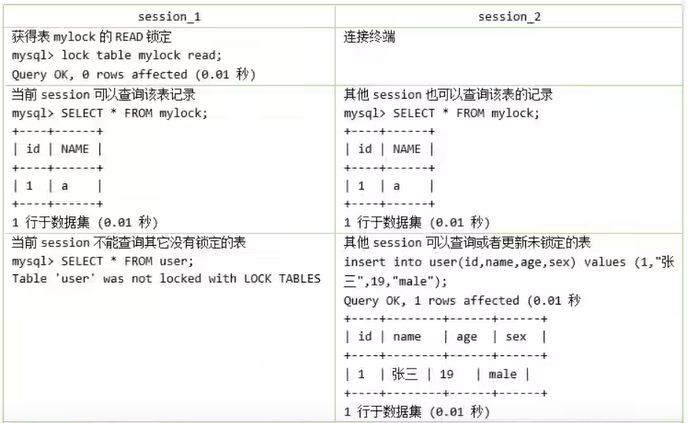
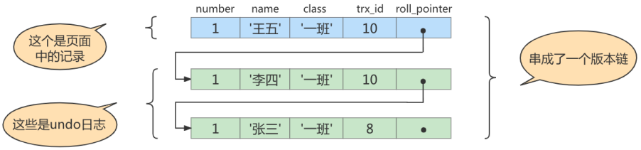
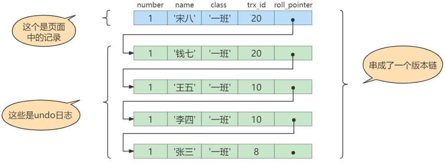

# MYSQL8 新特性
# 窗口函数
窗口函数的作用类似于子查询中对数据进行分组，不同的是，分组操作会把分组的结果聚合成一条记录，而窗口函数是将结果置于每一条数据记录中。
# 窗口函数分类
可分为静态窗口函数和动态窗口函数。
- 静态窗口函数的窗口大小是固定的，不会因为记录的不同而不同
- 动态窗口函数的窗口大小会随着记录的不同而变化。
窗口函数总体上可以分为序号函数、分布函数、前后函数、首尾函数和其他函数，如下表：

# 语法结构
函数 OVER （[PARTTITION BY 字段名 ORDER BY 字段名 ASC｜DESC]） |
或者是
函数 OVER 窗口名 ....WINDOW 窗口名 AS（[PARTTITION BY 字段名 ORDER BY 字段名 ASC｜DESC]） |
- OVER 关键字指定函数窗口的范围
- 如果省略后面括号的内容，则窗口会包含满足 where 条件的所有记录，窗口函数会基于所有满足 WHERE 条件的记录进行计算
- 如果 OVER 关键字后面的括号不为空，则可以使用如下语法设置窗口。
- 窗口名：为窗口设置一个别名，用来标识窗口
- PARTITION BY 子句：指定窗口函数按照哪些字段进行分组。分组后，窗口函数可以在每个分组分别执行。
- ORDER BY 子句：指定窗口函数按照哪些字段进行排序。执行排序操作使窗口函数按照排序后的数据记录的顺序进行编号
- FRAME 子句：为分区中的某个子集定义规则，可以用来作为滑动窗口使用。
# 分类讲解
# 序号函数：
ROW_NUMBER 函数：

RANK 函数：

DENSE_RANK 函数和 RANK 函数相反。


# 分布函数
PERCENT_RANK 函数：
此函数是等级值百分比函数，按照公式 来计算。
其中 rank 的值为使用 RANK 函数产生的序号，rows 值为当前窗口的总记录数。

CUME_DIST 函数:
此函数主要用于查询小于或等于某个值的比例


# 前后函数
LAG (expr,n) 函数：
LAG (expr,n) 函数返回当前行的前 n 行的 expr 值。

LEAD (expr,n) 函数：
LEAD (expr,n) 函数返回当前行的后 n 行的 expr 的值。


# 首尾函数
FIRST_VALUE (expr) 函数
FIRST_VALUE (expr) 函数返回第一个 expr 的值。

LAST_VALUE (expr) 函数：返回最后一个 expr 的值。

# 其他函数
NTH_VALUE (expr，n) 函数：
NTH_VALUE (expr，n) 函数返回第 n 个 expr 的值

NTILE (n) 函数：
将分区中的有序数据分为 n 个桶，记录桶编号

# 字符集的相关操作
# 修改 Mysql5.7 字符集
在 mysql8 之前，默认字符集为 latin1 ，utf8 字符集指向的是 utf8mb3 ，网站开发人员在数据库设计时往往会将编码修改为 utf8。如果遗忘修改默认的编码，就会出现乱码的问题。从 mysql8 开始，数据库默认的编码就是 utf8mb4，从而避免上述乱码的问题。
操作 1：查看默认使用的字符集
show variables like 'character%'; | |
或者 | |
show variables like '%char%'; |
操作 2：修改 my.cnf 配置文件，在配置文件中指定字符集
character_set_server=utf8 |

# 已有库已有表字符集的变更
mysql5.7 版本中，以前创建的库，创建的表字符集还是 latin1。
操作 1：修改已有数据库的字符集
alter database 数据库名 character set 'utf8'; |
操作 2：修改已有表的字符集
alter table 表名 convert to character set 'utf8'; |
# 各级别的字符集（底层原理说明）
mysql 有 4 个级别的字符集和比较规则，分别是：
- 服务器级别
- 数据库级别
- 表级别
- 列级别
- character_set_server：服务器级别的字符集
- character_set_database：当前数据库的字符集
- character_set_client：服务器解码请求时使用的字符集
- character_set_connection：服务器处理请求时会把请求字符串从 character_set_client 转为 character_set_connection
- character_set_result：服务器向客户端返回数据时使用的字符集
设置 server 服务器级别的字符集后，相应的 database 字符集也会跟着变化。
- 当创建数据库时，不指定字符集，则使用 database 指定的字符集
- 当创建表时不指定字符集，则会根据所在库的字符集默认指定
- 当创建字段不指定字符集时，则会根据所在表的字符集默认指定
# 字符集与比较规则
# utf8 与 utf8mb4
utf8 字符集表示一个字符需要使用 1-4 个字节，但是常使用的字符使用 1-3 个字节就可以表示了。而字符集表示一个字符所用到的最大字节长度，在某些方面会影响系统的存储和性能，所以定义了两个概念：
utf8mb3：阉割的 utf8 字符集，只使用 1-3 个字节表示字符。
utf8mb4：正宗的 utf8 字符集，使用 1-4 个字节表示字符。
查看 mysql 支持的字符集命令：show charset；
# 比较规则
Mysql 一共支持 41 种字符集，其中的 Default collation 表示这些字符集中一种默认的比较规则，里面包含着该比较规则主要作用于哪种语言。如 utf8_polish_ci 表示以波兰语的规则比较， utf8_general_ci 是一种通用的比较规则。
后缀表示该比较规则是否区分语言中的重音、大小写。具体如下：

常用操作：
#查看 GBK 字符集的比较规则 | |
show COLLATION LIKE 'gbk%'; | |
#查看服务器的字符集和比较规则 | |
show VARIABLES LIKE '%_server'; | |
#查看数据库的字符集和比较规则 | |
show VARIABLES DATABASE LIKE '%_database'; | |
#查看具体数据库的字符集 | |
show CREATE DATABASE 数据库名; | |
#修改数据库的字符集 | |
ALTER DATABASE 数据库名 DEFAULT CHARACTER SET 'utf8' COLLATE 'utf8_general_ci'; | |
#查看具体表的字符集 | |
show CREATE TABLE 表名; | |
#修改表的字符集 | |
ALTER TABLE 数据库名 DEFAULT CHARACTER SET 'utf8' COLLATE 'utf8_general_ci'; |
# 请求到相应过程中的编码
客户端请求 mysql 服务器时使用 utf8 编码，服务器使用 character_set_client 设置的字符集进行解码，在使用 character_set_connection 设置的字符集把 character_set_client 解码的内容编码到数据库中去查询，查询结果后在使用 character_set_result 设置的字符集编码返回给客户端，客户端在解码。
所以要求设置的编码必须要一致，可以添加如下配置到配置文件里可以指定 character_set_client、character_set_connection、character_set_result 三者的字符集。
[client] | |
default-character-set=utf8 |
# SQL 大小写规范与 sql_mode 的设置
# 查看大小写设置命令
show variables like 'lower_case_table_names'; |
lower_case_table_names 参数值的设置：
- 默认为 0，大小写敏感
- 设置 1，大小写不敏感。创建的表，数据库都是以小写的形式存在磁盘上，对于 SQL 语句都是转换为小写对表和数据库进行查找。
- 设置为 2，创建的表和数据库依据语句上格式存放，凡是查找都是转换为小写进行。
# Linux 下大小写规则设置
当想设置大小写不敏感时，要在 my.cnf 配置文件中 [mysqld] 中加入 lower_case_table_names=1 ，然后重启服务器。
- 但是要在重启数据库实例之前就需要将原来的数据库和表转换为小写，否则将找不到数据库名。
- 此参数适用于 MYSQL5.7，在 Mysql8 下禁止在重新启动 Mysql 服务时将
lower_case_table_names设置成不同于初始化 mysql 服务时设置的lower_case_table_names值。如果非要将 mysql8 是设置为大小写不敏感，具体步骤为：- 停止 mysql 服务
- 删除数据目录，即删除 /var/lib/mysql 目录
- 在配置文件中添加
lower_case_table_names=1 - 重新启动 mysql 服务
# SQL 编写建议
# sql_mode 的设置
sql_mode 会影响 mysql 支持的 sql 语法以及它执行的数据验证检查。通过设置 mysql_mode 可以完成不同严格程度的数据校验，有效的保证数据准确性。
MYSQL 服务器可以在不同的 SQL 模式下运行，并且可以针对不同的客户端以不同的方式应用这些模式，具体取决于 sql_mode 系统变量的值。
mysql5.6 和 5.7 默认的 sql_mode 模式参数是不一样的：
- 5.6 的 mode 默认值为空（即：NO_ENGINE_SUBSTITUTION），其实表示的是一个空值，相当于没有什么模式设置，可以理解为宽松模式。在这种设置下是可以允许一些非法操作的，比如允许一些非法数据的插入。
- 5.7 的 mode 是 STRICT_TRANS_TANLES，也就是严格模式，用于进行数据的严格校验，错误数据不能插入，报 error 错误，并且回滚事务。
# 宽松模式 vs 严格模式
宽松模式
如果设置的是宽松模式，那么在插入数据时，即使给了一个错误的数据，也可能会被接受，并且不会报错。
如：表中有一个 name 字段，类型为 char（10），在插入数据时长度超过了 10，例如‘1234567890abc’，超过了设定的长度，但不会报错，并且取前 10 个字符存上，也就是被存入了 1234567890，abc 忽略了。这就是宽松模式。
严格模式
严格模式上面的情况出现就会报错。
# 模式的查看和设置
select @@session.sql_mode | |
select @@global.sql_mode | |
#或者 | |
show variables like 'sql_mode'; | |
#设置 sql_mode 模式 | |
#session 只在当前会话中生效，关闭当前会话就不生效了。 | |
SET SESSION sql_mode = 想要的模式 | |
#GLOBLA 在当前服务生效，重启 mysql 服务后失效。 | |
SET GLOBAL sql_mode = 想要的模式 | |
#永久设置方式 | |
在my.cnf配置文件中配置sql_mode | |
[mysqld] | |
sql_mode = 想要的模式,可以选择多个模式，多个模式使用，分割。 |
# 常用模式

# 数据库和文件系统的关系
像 InnoDB、MyISAM 这样的存储引擎都是把表存储在磁盘上的，操作系统用来管理磁盘的结构被称为文件系统，所以用专业一点的话来表示就是：像 InnoDB、MyISAM 这样的存储引擎都是把表存储在文件系统上的， 读取数据 时， 存储引擎 会把数据从文件系统中读取出来返回， 写入数据 时，存储引擎会把数据 写到文件系统去 。
# 表在文件系统中的表示
# InnoDB 存储引擎模式
# 在 5.6.6 版本之前
进入 mysql 数据存储目录 data 下

数据库表的数据都存放在 ibdata1 （称为系统表空间）中，进入创建的 testdb 数据库，可以看到：

有三个文件：
db.opt存放的是创建数据库时数据库的配置信息__.frm文件存放的是创建表的结构__.ibd文件存放的是表的数据（也称为独立表空间）5.6.6 之前的版本应该是无。
# 在 5.7 版本
数据库表的数据可以选择存放在 ibdata1 （称为系统表空间）中，进入创建的 testdb 数据库，可以看到：
有三个文件：
db.opt存放的是创建数据库时数据库的配置信息__.frm文件存放的是创建表的结构__.ibd文件存放的是表的数据（也称为独立表空间）。
# 在 8 版本

数据库表的数据可以选择存放在 ibdata1 （称为系统表空间）中，进入创建的 testdb 数据库，可以看到：

不同于 5.7 版本，现在只有一个 __.ibd （独立表空间）文件，不止是存放数据，把表结构也都放入该文件中。
储备知识：
- InnoDB 其实是使用
页作为基本单位来管理存储空间的，默认页的大小为 16kb。- 对于 InnoDB 存储引擎来说，每个索引都对应着一颗 B + 树，该 B + 树的每个节点都是一个数据页，数据页之间不必要是物理连续的，因为数据页之间有
双向链表来维护这些页的顺序- InnoDB 的聚簇索引的叶子节点存储了完整的用户记录，也就是所谓的索引即数据，数据即索引。
为了更好的管理这些页，InnoDB 提出了一个 表空间 或者 文件空间 概念。这个表空间是一个抽象的概念，它可以对应文件系统上一个或多个真实文件（不同表空间对应的文件数量可能不同）。每一个表空间都可以被划分为很多 页 ，我们的表数据就存放在某个表空间的某些页里。
表空间有几种个不同的类型：
# 系统表空间
默认情况下，InnoDB 会在数据目录下创建一个名为 ibdata1 ，大小为 12M 的文件，这个文件就是对应的 系统表空间 ，该文件是 自拓展文件 ，当不够用时会自动增加文件大小。
如果想让系统表空间对应文件系统上多个实际文件，那么可以在 mysql 启动配置对应的文件路径以及它们的大小。
修改 my.cnf 配置文件：
[server] | |
innodb_data_file_path=data1:512M;data2:512M:autoextend |
这样在 mysql 启动时就会创建这两个大小为 512M 大小的文件作为系统表空间，其中 autoextend 表明文件不够用时会自动拓展 data2 文件的大小。
需要注意的一点是： 在一个MYSQL服务器中，系统表空间只有一份。 从 MYSQL5.5.7 到 5.6.6 之间的各个版本中，我们表中的数据都会被默认存储到这个系统表空间。
# 独立表空间
在 mysql5.6.6 之后的版本中，InnoDB 并不会默认把各个表的数据存储到系统表空间中，而是 为每一个表创建一个独立表空间 ，也就是创建了多少个表，就有多少个独立表空间。使用独立表空间来存储数据，会在该表所属的数据库对应的目录下创建一个表示该独立表空间的文件，文件名和表名相同，只不过添加了一个 .ibd 的拓展名而已。
# 系统表空间与独立表空间的设置
可以指定使用 系统表空间 还是 独立表空间 来存储数据，这个功能由启动参数 innodb_file_per_table 控制。
[server] | |
innodb_file_per_table=0 #0 代表使用系统表空间 1 代表使用独立表空间 |
# 证明在 mysql8 中 idb 文件中存放了表的结构信息
需要解析 ibd 文件。可以使用 orancle 提供的一个应用程序 ibd2sdi。在 mysql8 中不需要下载此程序，自带。到存储 ibd 文件的目录下，执行下面的命令：
ibd2sdi --dump-file=student.txt student.ibd |
# MyISAM 存储引擎模式
# 表结构
在该存储引擎模式下，会在数据目录下对应的数据库目录下创建一个专门用来描述表结构的文件：表名 .frm
# 表中数据和索引
索引都是 二级索引 ，数据和索引是分开存放的。所以在文件系统中也是使用不同的文件来存储数据文件和索引文件，同时表数据都存放在对应的数据库子目录下。 例如 test 表使用 MyISAM 存储引擎的话，在数据库中对应的目录小爱就会创建这三个文件：
test.frm 存储表结构 5.7版本是这个文件 test.sdi 8版本是这个文件 | |
test.MYD 存储数据 | |
test.MYI 存储索引 |
# 用户与权限管理
# 用户管理
MYSQL 用户可以分为 普通用户 和 root用户 。root 用户是超级管理员，拥有所有权限，包括创建用户、删除用户、和修改用户密码等管理权限；普通用户只拥有被授予的各种权限。
Mysql 提供了许多语句来管理用户账号，这些语句可以用来登陆和退出 Mysql 服务器、创建用户、删除用户、密码管理和权限管理等内容。
MYSQL 数据库安全性需要通过账户管理来保证。
# 登陆 MYSQL 服务器
mysql -h hostname | hostIP -p port -u username -p |
# 创建用户
使用 CREATE USER 语句来创建新用户，必须拥有 CREATE USER 权限。每增加一个用户，都会往 MYSQL.user 表中添加一条记录，但新创建的用户没有任何权限。添加的账户已经存在，会返回一个错误。
语法格式如下：
用户名由用户 (User) 和主机名 (Host) 构成
CREATE USER 用户名 [IDENTIFIED BY '密码'][,用户名[IDENTIFIED BY '密码']] | |
CREATE USER 'zhangsan'@'localhost' IDENTIFIED BY '123456'; |
# 修改用户
修改用户名：
UPDATE mysql.user set USER='li4' WHERE USER='wang5'; | |
// 在刷新一下 不然之前的没修改的账户还能登陆 | |
FLUSH PRIVILEGES; |
# 删除用户
使用 DROP USER 语句来删除 普通用户 ，也可以直接在 mysql.user 表中删除用户。
DROP USER 用户名 | |
DROP USER 'lisi'@'%'; |
# 设置当前用户密码
适用于 root 用户修改自己的密码，以及普通用户登陆后修改自己的密码。
推荐使用 ALTER USER 修改用户密码
旧的写法：
SET PASSWORD = PASSWORD('123456'); |
推荐写法：
使用 ALTER 命令来修改自身密码，如下命令修改当前登陆用户的密码。
#ALTER USER 写法 | |
ALTER USER USER(用户) IDENTIFIED BY ‘新密码’； |
使用 SET 语句来修改当前用户密码
使用 root 用户登陆后，可以使用 SET 语句来修改密码，如下：
SET PASSWORD = ‘新密码’ |
# 修改其他用户的密码
root 用户不仅可以修改自己的密码，还可以修改其他普通用户的密码。root 登陆 mysql 服务器后，可以通过 ALTER 语句和 SET 语句来修改普通用户的密码。
- 使用 ALTER 语句来修改普通用户的密码
ALTER USER user [IDENTIFIED BY ‘新密码’]
例子如下：
ALTER USER 'lisi'@'localhost' IDENTIFIED BY 'hello';
- 使用 SET 命令来修改普通用户密码
SET PASSWORD FOR 'username'@'hostname'='新密码'
# 权限管理
查看 mysql 所有权限。
show privileges; |
CREATE 和 DROP 权限，可以创建新的数据库和表，或删除已有的数据库和表。
SELECT、ISNERT、UPDATE、DELETE 权限允许在一个数据库现有的表上实施操作。
SELECT 权限只有在它们真正从一个表中检索行时才被用到。
INDEX 权限允许创建或删除索引，INDEX 适用于已有的表。
ALTER 权限可以使用 ALTER TABLE 来更改表的结构和重新命名表。
CREATE ROUTINE 权限用来创建保存的程序（函数和程序）ALTER ROUTINE 权限用来更改和删除保存的程序，EXECUTE 权限用于执行保存的程序。
GRANT 权限允许授权给其他用户，可用于数据库、表和保存的程序。
FILE 权限使用户可以使用 LOAD DATA INFILE 和 SELECT ...INTO OUTFILE 语句读或写服务器上的文件，任何被授权 FILE 权限的用户都能读或者写 MYSQL 服务器上的任何文件。

授予权限原则
- 只授予能满足需要的最小权限，防止用户干坏事。比如用户只是需要查询，那就只给 select 权限就可以了。
- 创建用户的时候限制用户的登录主机，一般是限制成指定 Ip 或者内网 IP 段。
- 为每个用户设置满足密码复杂度的密码。
- 定期清理不需要的用户，回收权限或者删除用户。
授予权限
给用户授予权限有两种方式，分别是通过把角色赋予用户给用户授权和直接给用户授权。
授权命令：
GRANT 权限1.....权限n ON 数据库名称.表名称 TO 用户名@用户地址 [IDENTIFIED BY '密码口令'];
例子：
给li4用户授予test库下所有表的CRUD权限
GRANT SELECT,INSERT,DELETE,UPDATE ON TEST.* TO li4@localhost;
授予joe用户对所有库所有表的全部权限，不包括grant权限。GRANT ALL PRIVILEGES ON *.* TO joe@'%';
查看权限
- 查看当前用户权限
SHOW GRANTS;
SHOW GRANTS FOR CURRENT_USER;
SHOW GRANTS FOR CURRENT_USER();
- 查看某用户的全局权限
SHOW GRANTS FOR ‘user’@'主机地址';
收回权限
使用 REVOKE 语句来收回权限。
收回权限命令
REVOKE 权限1.....权限n ON 数据库名.表名 FROM 用户名@用户地址;

# 权限表
MYSQL 通过 权限表来控制用户对数据库的访问 ，权限表放在 mysql 数据库中。mysql 数据库系统会根据这些权限表的内容为每个用户赋予相应的权限。这些权限表中最重要的是 user 表、db 表。除此之外，还有 table_priv 表、collumn_priv 表和 proc_priv 表。在 Mysql 启动时，服务器将这些数据库表中权限信息的内容读人内存。
# 角色管理
角色是在 8 版本引入的新功能。在 MYSQL 中，角色是权限的集合，可以为角色添加或移除权限。用户可以被赋予角色，同时也被授予角色包含的权限。对角色进行操作需要较高的权限。并且像账户一样，角色可以拥有授予和撤销的权限。
# 角色创建
使用 CREATE ROLE 语句，创建角色
CREATE ROLE 'role_name'[@'host_name'] [,'role_name'[@'host_name']] |
角色名称规则和用户类似，如果 host_name 省略，默认为 "%"，role_name 不可省略。
# 角色赋予权限
语法格式如下：
GRANT privileges ON db_name.table_name TO 'role_name'[@'host_name']; |
privileges 代表权限的名称，多个权限以逗号隔开。可使用 SHOW 语句查询权限名称。SHOW PRIVILEGES\G 命令
# 查看角色权限
语法格式如下：
SHOW GRANTS FOR '角色名'; |
# 回收角色权限
语法格式如下：
REVOKE privileges ON db_name.table_name FROM ‘rolename’； | |
例如:撤销school_write角色插入、查询、更新在school数据库所有表的权限。 | |
REVOKE INSERT,SELECT,UPDATE ON school.* FROM 'school_write'@'localhost'; |
# 删除角色
语法格式：
DROP ROLE role ,[role2].... |
# 给用户赋予角色
语法格式：
GRANT role,... TO user [,user2,...]; |
role 代表角色， user 代表用户。可以将多个角色同时赋予多个用户。
# 激活角色
MYSQL 创建了角色后，默认都是没有激活的，也就是不能用的。必须要手动激活才能使用。用户才能拥有该角色的对应的权限。
激活方式 1
使用 set default role 命令激活角色
SET DEFAULT role 角色 ALL TO 用户
举例：为下面4个用户默认激活所有已拥有的角色：SET DEFAULT role 'manager'@'localhost' ALL TO 'dev'@'localhost','dev1'@'%',...
激活方式 2
将 activate_all_roles_on_login 设置为 ON
SET GLOBAL activate_all_roles_on_login = ON；
意思是对所有角色永久激活。运行这条语句后，用户才真正拥有了赋予角色的所有权限。
# 撤销用户的角色
语法格式：
REVOKE role FROM user； | |
举例：撤销admin用户read角色 | |
REVOKE read FROM 'admin'@'localhost'; |
# MYSQL 逻辑架构

# MYSQL Server 结构可以分为三层结构：
# 第一层：连接层
（系统）客户端访问 MYSQL 服务器前，做的第一件事就是建立 TCP 连接。
经过三次握手建立连接后，MYSQL 服务器对 TCP 传输过来的账号密码进行身份认证、权限获取。
一个系统只会和 MYSQL 服务器建立一次连接吗？只能有一个系统和 MYSQL 进行连接吗？
当然不是，多个系统都可以和 MYSQL 服务器进行连接，每个系统可以建立多个连接。为了解决创建与 TCP 频繁创建销毁带来的资源耗尽、性能下降问题。mysql 服务器里有专门的 TCP连接池 限制连接数，采用 长连接模式 复用 TCP 连接。
# 第二层：服务层
第二层架构是核心服务层，很多核心功能放在这里。如 SQL 接口，并完成缓存查询，SQL 的分析和优化及部分内置函数的执行。所有跨存储引擎的功能也在这一层实现，如过程、函数等。
在该层，服务器会 解析查询 并创建相应的内部 解析树 ，并对其完成相应的 优化 ：如确定查询表的顺序，是否利用索引等，最后生成相应的执行操作。
如果是 SELECT 语句，服务器还会 查询内部缓存 。如果缓存空间足够大，这样在解决大量读操作的环境中能够很好的提升系统的性能。
SQL Interface：SQL 接口
接收用户的 SQL 命令，并且返回用户需要查询的结果。
Mysql 支持 DML、DDL、存储过程、视图、触发器、自定义函数等多种 SQL 语言接口
Parser：解析器
在解析器中对 SQL 语句进行语法分析、语义分析。将 SQL 语句分解成数据结构，并且将这个结构传递到后续步骤，以后 SQL 语句的传递和处理就是基于这个结构的。
在 SQL 命令传递到解析器的时候会被解析器验证和分析，并为其创建
语法树，并根据数据字段丰富查询语法树，会验证该客户端是否具有执行该查询的权限。创建好语法树之后，MYSQL 还会对 SQL 查询进行语法上的优化，进行查询重写。Optimizer：查询优化器
SQL 语句在语法解析之后，插叙之前会使用查询优化器确定 SQL 语句的执行路径，生成一个执行计划。
这个执行计划表明应该使用
哪些索引进行查询（全表检索还是使用索引检索），表之间的连接顺序如何，最后会按照执行计划中的步骤调用存储引擎提供的方法来真正的执行查询，并将查询结果返回给用户。它使用
选取-投影-连接策略进行查询。例如：
select id，name from student where gender = '女'
这个查询语句会先根据。WHERE 条件进行
选取，而不是将全部查询出来后再进行 gender 过滤。这个查询会先根据 id 和 name 来进行投影，而不是将属性全部取出来后再进行过滤，将这两个查询条件
连接起来生成最终结果。Caches & Buffer：查询缓存组件
MYSQL 内部维持着一些 Caches & Buffer，比如 QUery Cache 用来缓存一条 SELECT 语句的执行结果，如果能够在其中找到对应的查询结果，那么就没必要在进行查询解析，优化和执行的整个过程，直接将结果返回给用户。
在 8 中已经删除。
# 第三层：引擎层
存储引擎在 MYSQL 架构中是一个插件式的存储引擎，可以根据业务的不同选择不同的存储引擎，也可以选择自己设置的存储引擎。
插件式存储引擎，真正负责了 MYSQL 中数据的存储和提取，对物理服务器级别维护的底层数据执行操作，服务器通过 API 与存储引擎进行通信。不同的存储引擎具有的功能不同，可以根据需求进行选取。
# SQL 执行流程
mysql 中 SQL 执行流程

# 存储引擎
# InnoDB 引擎：具备外建支持功能的事务存储引擎
- InnoDB 是 mysql 的默认事务性引擎，它被设计用来处理大量的短期事务。可以确保事务的完整提交和回滚。
- 除了增加和查询外，还需要更新、删除操作，那么，应优先选择 InnoDB 存储引擎。
InnoDB是为处理巨大数据量的最大性能设计。- 对比 MyISAM 存储引擎，
InnoDb写的处理效率差一些，并且会占用更多的磁盘空间以保存数据和索引。 - MyISAM 只缓存索引，不缓存真实数据；InnoDB 不仅仅缓存索引还要缓存真实数据，对
内存要求较高，而且内存大小对性能有决定性的影响。
# MyISAM 引擎：主要的非事务处理存储引擎
- 提供了大量的特性，包括全文索引、压缩、空间函数等，但
MyISAM不支持事务、行级锁、外建。有一个毫无疑问的缺陷就是崩溃后无法安全恢复。 - 优势是访问的
速度快，对事务完整性没有要求，主要以 SELECT、INSERT 为主。 - 针对数据统计有额外的常数存储。所以 count (*) 查询效率高。
- 应用场景：只读应用或者以读为主的应用
# 索引
索引是帮助 MYSQL 高效获取数据的排好序的数据结构。
索引是在存储引擎中实现的 ，因此每种存储引擎的索引不一定完全相同，并且每种存储引擎不一定支持所有索引类型。同时，存储引擎可以定义每个表的 最大索引数 和 最大索引长度 。所有存储引擎支持每个表至少 16 个索引，总索引长度至少为 256 字节。
优点
- 提高查询效率
- 通过创建唯一索引，可以保证数据库表中每一行数据的唯一性。
- 在实现数据的参考完整性方面，可以
加速表和表之间的连接。换句话说，对于有依赖关系的父子表和父表联合查询时，可以提高查询速度。 - 在使用分组和排序子句进行数据查询时，可以
显著减少查询中分组和排序时间，降低 CPU 消耗。
缺点
- 创建索引和维护索引要
耗费时间，随着数据量的增加，所耗费的时间也会增加。 - 索引需要占
据磁盘空间，除了数据表占数据空间之外，每一个索引还要占一定的物理空间，存储在磁盘上，如果有大量的索引，索引文件可能比数据文件更快达到最大文件尺寸。 降低更新表的速度。当对表进行增加、更新和删除时，索引也需要动态维护，这样就降低了数据的维护速度。
# InnoDB 中索引的推演
# 索引之前的查找
先来看一个精确匹配的例子：
SELECT [列名列表] FROM 表名 WHERE 列名 = xxx; |
在一个页中查找
假设目前表中的记录比较少，所有的记录都可以被存放到一个页中，在查找记录的时候可以根据搜索条件的不同分为两种情况：
以主键为搜索条件
可以在页目录中使用
二分法快速定位到对应的槽，然后再遍历该槽对用分组中的记录即可快速找到指定记录。以其他列作为搜索条件
因为在数据页中并没有对非主键列简历所谓的页目录，所以我们无法通过二分法快速定位相应的槽。这种情况下只能从
最小记录开始依次遍历单链表中的每条记录， 然后对比每条记录是不是符合搜索条件。很显然，这种查找的效率是非常低的。
在很多页中查找
在很多页中查找记录的活动可以分为两个步骤：
- 定位到记录所在的页
- 从所在的页内中查找相应的记录
在没有索引的情况下，不论是根据主键列或者其他列的值进行查找，由于我们并不能快速的定位到记录所在的页，所以只能 从第一个页沿着双向链表 一直往下找，在每一个页中根据我们上面的查找方式去查 找指定的记录。因为要遍历所有的数据页，所以这种方式显然是 超级耗时 的。如果一个表有一亿条记录呢？此时 索引 应运而生。
# 设计索引
建一个表：
mysql> CREATE TABLE index_demo( | |
-> c1 INT, | |
-> c2 INT, | |
-> c3 CHAR(1), | |
-> PRIMARY KEY(c1) | |
-> ) ROW_FORMAT = Compact; |
这个新建的 index_demo 表中有 2 个 INT 类型的列，1 个 CHAR (1) 类型的列，而且我们规定了 c1 列为主键， 这个表使用 Compact 行格式来实际存储记录的。这里我们简化了 index_demo 表的行格式示意图：

我们只在示意图里展示记录的这几个部分：
- record_type ：记录头信息的一项属性，表示记录的类型， 0 表示普通记录、 2 表示最小记 录、 3 表示最大记录、 1 暂时还没用过，下面讲。
- mysql> CREATE TABLE index_demo (-> c1 INT, -> c2 INT, -> c3 CHAR (1), -> PRIMARY KEY (c1) -> ) ROW_FORMAT = Compact; next_record ：记录头信息的一项属性，表示下一条地址相对于本条记录的地址偏移量，我们用 箭头来表明下一条记录是谁。
- 各个列的值 ：这里只记录在 index_demo 表中的三个列，分别是 c1 、 c2 和 c3 。
- 其他信息 ：除了上述 3 种信息以外的所有信息，包括其他隐藏列的值以及记录的额外信息。
将记录格式示意图的其他信息项暂时去掉并把它竖起来的效果就是这样：
把一些记录放到页里的示意图就是：

# 一个简单的索引设计方案
我们在根据某个搜索条件查找一些记录时为什么要遍历所有的数据页呢？因为各个页中的记录并没有规律，我们并不知道我们的搜索条件匹配哪些页中的记录，所以不得不依次遍历所有的数据页。所以如果我们 想快速的定位到需要查找的记录在哪些数据页 中该咋办？我们可以为快速定位记录所在的数据页而建立一个目录 ，建这个目录必须完成下边这些事：
下一个数据页中用户记录的主键值必须大于上一个页中用户记录的主键值。
假设：每个数据结构最多能存放 3 条记录（实际上一个数据页非常大，可以存放下好多记录）。
INSERT INTO index_demo VALUES(1, 4, 'u'), (3, 9, 'd'), (5, 3, 'y'); |
那么这些记录以及按照主键值的大小串联成一个单向链表了，如图所示：

从图中可以看出来， index_demo 表中的 3 条记录都被插入到了编号为 10 的数据页中了。此时我们再来插入一条记录
INSERT INTO index_demo VALUES(4, 4, 'a'); |
因为 页 10 最多只能放 3 条记录，所以我们不得不再分配一个新页：

注意：新分配的 数据页编号可能并不是连续的。它们只是通过维护者上一个页和下一个页的编号而建立了 链表 关系。另外，页 10 中用户记录最大的主键值是 5，而页 28 中有一条记录的主键值是 4，因为 5>4，所以这就不符合下一个数据页中用户记录的主键值必须大于上一个页中用户记录的主键值的要求，所以在插入主键值为 4 的记录的时候需要伴随着一次 记录移动，也就是把主键值为 5 的记录移动到页 28 中，然后再把主键值为 4 的记录插入到页 10 中，这个过程的示意图如下：
这个过程表明了在对页中的记录进行增删改查操作的过程中，我们必须通过一些诸如 记录移动 的操作来始终保证这个状态一直成立：下一个数据页中用户记录的主键值必须大于上一个页中用户记录的主键值。这个过程称为 页分裂。
# 给所有的页建立一个目录项
由于数据页的 编号可能是不连续 的，所以在向 index_demo 表中插入许多条记录后，可能是这样的效果：

我们需要给它们做个 目录，每个页对应一个目录项，每个目录项包括下边两个部分：
1）页的用户记录中最小的主键值，我们用 key 来表示。
2）页号，我们用 page_on 表示。
以 页 28 为例，它对应 目录项 2 ，这个目录项中包含着该页的页号 28 以及该页中用户记录的最小主 键值 5 。我们只需要把几个目录项在物理存储器上连续存储（比如：数组），就可以实现根据主键 值快速查找某条记录的功能了。比如：查找主键值为 20 的记录，具体查找过程分两步：
- 先从目录项中根据 二分法 快速确定出主键值为 20 的记录在 目录项 3 中（因为 12 < 20 < 209 ），它对应的页是 页 9 。
- 再根据前边说的在页中查找记录的方式去 页 9 中定位具体的记录。
至此，针对数据页做的简易目录就搞定了。这个目录有一个别名，称为 索引 。
# InnoDB 中的索引方案
① 迭代 1 次：目录项纪录的页
InnoDB 怎么区分一条记录是普通的 用户记录 还是 目录项记录 呢？使用记录头信息里的 record_type 属性，它的各自取值代表的意思如下：
- 0：普通的用户记录
- 1：目录项记录
- 2：最小记录
- 3：最大记录
我们把前边使用到的目录项放到数据页中的样子就是这样：

从图中可以看出来，我们新分配了一个编号为 30 的页来专门存储目录项记录。这里再次强调 目录项记录 和普通的 用户记录 的不同点：
- 目录项记录 的 record_type 值是 1，而 普通用户记录 的 record_type 值是 0。
- 目录项记录只有 主键值和页的编号 两个列，而普通的用户记录的列是用户自己定义的，可能包含 很多列 ，另外还有 InnoDB 自己添加的隐藏列。
- 了解：记录头信息里还有一个叫 min_rec_mask 的属性，只有在存储 目录项记录 的页中的主键值最小的 目录项记录 的 min_rec_mask 值为 1 ，其他别的记录的 min_rec_mask 值都是 0 。
相同点：两者用的是一样的数据页，都会为主键值生成 Page Directory （页目录），从而在按照主键值进行查找时可以使用 二分法 来加快查询速度。
现在以查找主键为 20 的记录为例，根据某个主键值去查找记录的步骤就可以大致拆分成下边两步：
- 先到存储 目录项记录 的页，也就是页 30 中通过 二分法 快速定位到对应目录项，因为 12 < 20 < 209 ，所以定位到对应的记录所在的页就是页 9。
- 再到存储用户记录的页 9 中根据 二分法 快速定位到主键值为 20 的用户记录。
② 迭代 2 次：多个目录项纪录的页

从图中可以看出，我们插入了一条主键值为 320 的用户记录之后需要两个新的数据页：
- 为存储该用户记录而新生成了 页 31 。
- 因为原先存储目录项记录的 页 30 的容量已满 （我们前边假设只能存储 4 条目录项记录），所以不得 不需要一个新的 页 32 来存放 页 31 对应的目录项。
现在因为存储目录项记录的页不止一个，所以如果我们想根据主键值查找一条用户记录大致需要 3 个步骤，以查找主键值为 20 的记录为例：
- 确定 目录项记录页 我们现在的存储目录项记录的页有两个，即 页 30 和 页 32 ，又因为页 30 表示的目录项的主键值的 范围是 [1, 320) ，页 32 表示的目录项的主键值不小于 320 ，所以主键值为 20 的记录对应的目 录项记录在 页 30 中。
- 通过目录项记录页 确定用户记录真实所在的页 。 在一个存储 目录项记录 的页中通过主键值定位一条目录项记录的方式说过了。
- 在真实存储用户记录的页中定位到具体的记录。
③ 迭代 3 次：目录项记录页的目录页
如果我们表中的数据非常多则会 产生很多存储目录项记录的页 ，那我们怎么根据主键值快速定位一个存储目录项记录的页呢？那就为这些存储目录项记录的页再生成一个 更高级的目录 ，就像是一个多级目录一样， 大目录里嵌套小目录 ，小目录里才是实际的数据，所以现在各个页的示意图就是这样子：

如图，我们生成了一个存储更高级目录项的 页 33 ，这个页中的两条记录分别代表页 30 和页 32，如果用 户记录的主键值在 [1, 320) 之间，则到页 30 中查找更详细的目录项记录，如果主键值 不小于 320 的 话，就到页 32 中查找更详细的目录项记录。
我们可以用下边这个图来描述它：
这个数据结构，它的名称是 B + 树 。
④ B+Tree
一个 B + 树的节点其实可以分成好多层，规定最下边的那层，也就是存放我们用户记录的那层为第 0 层， 之后依次往上加。之前我们做了一个非常极端的假设：存放用户记录的页 最多存放 3 条记录 ，存放目录项 记录的页 最多存放 4 条记录 。其实真实环境中一个页存放的记录数量是非常大的，假设所有存放用户记录 的叶子节点代表的数据页可以存放 100 条用户记录 ，所有存放目录项记录的内节点代表的数据页可以存 放 1000 条目录项记录 ，那么：
- 如果 B + 树只有 1 层，也就是只有 1 个用于存放用户记录的节点，最多能存放 100 条记录。
- 如果 B + 树有 2 层，最多能存放 1000×100=10,0000 条记录。
- 如果 B + 树有 3 层，最多能存放 1000×1000×100=1,0000,0000 条记录。
- 如果 B + 树有 4 层，最多能存放 1000×1000×1000×100=1000,0000,0000 条记录。相当多的记录！
你的表里能存放 100000000000 条记录吗？所以一般情况下，我们用到的 B + 树都不会超过 4 层 ，那我们通过主键值去查找某条记录最多只需要做 4 个页面内的查找（查找 3 个目录项页和一个用户记录页），又因为在每个页面内有所谓的 Page Directory （页目录），所以在页面内也可以通过 二分法 实现快速 定位记录。
# 常见索引概念
索引按照物理实现方式，索引可以分为 2 种： 聚簇（聚集） 和 非聚簇（非聚集）索引 ， 非聚簇（非聚集）索引 也称为 二级索引或者辅助索引 。
# 聚簇索引
聚簇索引 并不是一种单独的索引类型，而是 一种数据存储方式 （所有的用户记录都存储在叶子节点），也就是所谓的 索引即数据，数据即索引 。
聚簇 表示数据行和相邻的键值聚簇的存储在一起。
特点：
使用记录主键值的大小进行记录和页的排序，这包括三个方面的含义：
页内的记录是按照主键的大小顺序排成一个单向链表。- 各个存放
用户记录的页也是根据页中用户记录的主键大小顺序排成一个双向链表。 - 存放
目录项记录的页分为不同的层次，在同一层次中的页也是根据页中目录项记录的主键大小顺序排成一个双向链表。
B + 树的 叶子节点 存储的是完整的用户记录。
所谓完整的用户记录，就是指这个记录中存储了所有列的值（包括隐藏列）。
我们把具有这两种特性的 B + 树称为聚簇索引，所有完整的用户记录都存放在这个 聚簇索引 的叶子节点处。这种聚簇索引并不需要我们在 MySQL 语句中显式的使用 INDEX 语句去创建， InnDB 存储引擎会 自动 的为我们创建聚簇索引。
优点：
数据访问更快，因为聚簇索引将索引和数据保存在同一个 B + 树中，因此从聚簇索引中获取数据比非聚簇索引更快- 聚簇索引对于主键的
排序查找和范围查找速度非常快 - 按照聚簇索引排列顺序，查询显示一定范围数据的时候，由于数据都是紧密相连，数据库不用从多 个数据块中提取数据，所以
节省了大量的io操作。
缺点：
插入速度严重依赖于插入顺序，按照主键的顺序插入是最快的方式，否则将会出现页分裂，严重影响性能。因此，对于 InnoDB 表，我们一般都会定义一个自增的ID列为主键更新主键的代价很高，因为将会导致被更新的行移动。因此，对于 InnoDB 表，我们一般定义主键为不可更新二级索引访问需要两次索引查找，第一次找到主键值，第二次根据主键值找到行数据
# 二级索引（辅助索引、非聚簇索引）
如果我们想以别的列作为搜索条件该怎么办？肯定不能是从头到尾沿着链表依次遍历记录一遍。
答案：我们可以 多建几颗B+树 ，不同的 B + 树中的数据采用不同的排列规则。比方说我们用 c2 列的大小作为数据页、页中记录的排序规则，再建一课 B + 树，效果如下图所示：

这个 B + 树与上边介绍的聚簇索引有几处不同：

# 回表概念
我们根据这个以 c2 列大小排序的 B + 树只能确定我们要查找记录的主键值，所以如果我们想根 据 c2 列的值查找到完整的用户记录的话，仍然需要到 聚簇索引 中再查一遍，这个过程称为 回表 。也就 是根据 c2 列的值查询一条完整的用户记录需要使用到 2 棵 B + 树！
问题：为什么我们还需要一次 回表 操作呢？直接把完整的用户记录放到叶子节点不 OK 吗？
回答：
如果把完整的用户记录放到叶子结点是可以不用回表。但是 太占地方 了，相当于每建立一课 B + 树都需要把所有的用户记录再都拷贝一遍，这就有点太浪费存储空间了。
因为这种按照 非主键列 建立的 B + 树需要一次回表操作才可以定位到完整的用户记录，所以这种 B + 树也被称为 二级索引 ，或者辅助索引。由于使用的是 c2 列的大小作为 B + 树的排序规则，所以我们也称这个 B + 树为 c2 列简历的索引。
非聚簇索引的存在不影响数据在聚簇索引中的组织，所以一张表可以有多个非聚簇索引。
小结：聚簇索引与非聚簇索引的原理不同，在使用上也有一些区别：
- 聚簇索引的
叶子节点存储的就是我们的数据记录，非聚簇索引的叶子节点存储的是数据位置。非聚簇索引不会影响数据表的物理存储顺序。 - 一个表
只能有一个聚簇索引，因为只能有一种排序存储的方式，但可以有多个非聚簇索引，也就是多个索引目录提供数据检索。 - 使用聚簇索引的时候，数据的
查询效率高，但如果对数据进行插入，删除，更新等操作，效率会比非聚簇索引低。
# 联合索引
我们也可以同时以多个列的大小作为排序规则，也就是同时为多个列建立索引，比方说我们想让 B + 树按 照 c2 和 c3 列 的大小进行排序，这个包含两层含义：
- 先把各个记录和页按照 c2 列进行排序。
- 在记录的 c2 列相同的情况下，采用 c3 列进行排序
为 c2 和 c3 建立的索引的示意图如下：

如图所示，我们需要注意以下几点：
- 每条目录项都有 c2、c3、页号这三个部分组成，各条记录先按照 c2 列的值进行排序，如果记录的 c2 列相同，则按照 c3 列的值进行排序
- B + 树叶子节点处的用户记录由 c2、c3 和主键 c1 列组成
注意一点，以 c2 和 c3 列的大小为排序规则建立的 B + 树称为 联合索引 ，本质上也是一个二级索引。它的意 思与分别为 c2 和 c3 列分别建立索引的表述是不同的，不同点如下：
- 建立 联合索引 只会建立如上图一样的 1 棵 B + 树。
- 为 c2 和 c3 列分别建立索引会分别以 c2 和 c3 列的大小为排序规则建立 2 棵 B + 树。
# InnoDB 的 B + 树索引的注意事项
根页面位置万年不动
实际上 B + 树的形成过程是这样的：
- 每当为某个表创建一个 B + 树索引（聚簇索引不是人为创建的，默认就有）的时候，都会为这个索引创建一个
根结点页面。最开始表中没有数据的时候，每个 B + 树索引对应的根结点中即没有用户记录，也没有目录项记录。 - 随后向表中插入用户记录时，先把用户记录存储到这个
根节点中。 - 当根节点中的可用
空间用完时继续插入记录，此时会将根节点中的所有记录复制到一个新分配的页，比如页a中，然后对这个新页进行页分裂的操作，得到另一个新页，比如页b。这时新插入的记录根据键值（也就是聚簇索引中的主键值，二级索引中对应的索引列的值）的大小就会被分配到页a或者页b中，而根节点便升级为存储目录项记录的页。
这个过程特别注意的是：一个 B + 树索引的根节点自诞生之日起，便不会再移动。这样只要我们对某个表建议一个索引，那么它的根节点的页号便会被记录到某个地方。然后凡是 InnoDB 存储引擎需要用到这个索引的时候，都会从哪个固定的地方取出根节点的页号，从而来访问这个索引。
内节点中目录项记录的唯一性
我们知道 B + 树索引的内节点中目录项记录的内容是 索引列 + 页号 的搭配，但是这个搭配对于二级索引来说有点不严谨。还拿 index_demo 表为例，假设这个表中的数据是这样的：

如果二级索引中目录项记录的内容只是 索引列 + 页号 的搭配的话，那么为 c2 列简历索引后的 B + 树应该长这样：

如果我们想新插入一行记录，其中 c1 、 c2 、 c3 的值分别是: 9 、 1 、 c , 那么在修改这个为 c2 列建立的二级索引对应的 B+ 树时便碰到了个大问题：由于 页3 中存储的目录项记录是由 c2列 + 页号 的值构成的， 页3 中的两条目录项记录对应的 c2 列的值都是 1，而我们 新插入的这条记录 的 c2 列的值也是 1 ，那我们这条新插入的记录到底应该放在 页4 中，还是应该放在 页5 中？答案：对不起，懵了
为了让新插入记录找到自己在那个页面，我们需要保证在 B + 树的同一层页节点的目录项记录除页号这个字段以外是唯一的。所以对于二级索引的内节点的目录项记录的内容实际上是由三个部分构成的：
- 索引列的值
- 主键值
- 页号
也就是我们把 主键值 也添加到二级索引内节点中的目录项记录，这样就能保住 B+ 树每一层节点中各条目录项记录除页号这个字段外是唯一的，所以我们为 c2 建立二级索引后的示意图实际上应该是这样子的：

这样我们再插入记录 (9, 1, 'c') 时，由于 页3 中存储的目录项记录是由 c2列 + 主键 + 页号 的值构成的，可以先把新纪录的 c2 列的值和 页3 中各目录项记录的 c2 列的值作比较，如果 c2 列的值相同的话，可以接着比较主键值，因为 B + 树同一层中不同目录项记录的 c2列 + 主键 的值肯定是不一样的，所以最后肯定能定位唯一的一条目录项记录，在本例中最后确定新纪录应该被插入到 页5 中。
一个页面最少存储 2 条记录
一个 B + 树只需要很少的层级就可以轻松存储数亿条记录，查询速度相当不错！这是因为 B + 树本质上就是一个大的多层级目录，每经过一个目录时都会过滤掉许多无效的子目录，直到最后访问到存储真实数据的目录。那如果一个大的目录中只存放一个子目录是个啥效果呢？那就是目录层级非常非常多，而且最后的那个存放真实数据的目录中只存放一条数据。所以 InnoDB 的一个数据页至少可以存放两条记录。
# MyISAM 中的索引方案
# MyISAM 索引的原理
我们知道 InnoDB中索引即数据 ，也就是聚族索引的那棵 B + 树的叶子节点中已经把所有完整的用户记录都包含了，而 MyISAM 的索引方案虽然也使用树形结构，但是却将索引和数据分开存储：
- 将表中的记录
按照记录的插入顾序单独存储在一个文件中，称之为数据文件。这个文件并不划分为若干个数据页，有多少记录就往这个文件中塞多少记录就成了。由于在插入数据的时候并没有刻意按照主键大小排序，所以我们并不能在这些数据上使用二分法进行查找。 - 使用 MyISAM 存储引擎的表会把索引信息另外存储到一个称为
索引文件的另一个文件中。MyISAM 会单独为表的主键创建一个索引，只不过在索引的叶子节点中存储的不是完整的用户记录，而是主键值 ＋数据记录地址的组合。
这里设表一共有三列，假设我们以 col1 为主键，上图是一个 MyISAM 表的主索引 (Primary key) 示意。可以看出 MyISAM的索引文件仅仅保存数据记录的地址 。在 MyISAM 中，主键索引和二级素引 (Secondary key）在结构上没有任何区别，只是主键索引要求 key 是唯一的，而二级素引的 key 可以重复。如果我们在 Col2 上建立一个二级索引，则此素引的结构如下图所示：

同样也是一棵 B+Tree， data 域保存数据记录的地址。因此，MyISAM 中索引检索的算法为：首先按照 B+Tree 搜索算法搜索索引，如果指定的 key 存在，则取出其 data 域的值，然后以 data 域的值为地址，读取相应数据记录。
# MyISAM 与 InnoDB 对比
MyISAM 的索引方式都是 “非聚簇” 的，与 InnoDB 包含 1 个聚簇索引是不同的。小结两种引擎中索引的区别：
- 在 InnoDB 存储引擎中，我们只需要根据主键值对 聚簇索引 进行一次查找就能找到对应的记录，而在 MyISAM 中却需要进行一次 回表 操作，意味着 MyISAM 中建立的索引相当于全部都是 二级索引 。
- InnoDB 的数据文件本身就是索引文件，而 MyISAM 索引文件和数据文件是 分离的 ，索引文件仅保存数 据记录的地址。
- InnoDB 的非聚簇索引 data 域存储相应记录 主键的值 ，而 MyISAM 索引记录的是 地址 。换句话说， InnoDB 的所有非聚簇索引都引用主键作为 data 域。
- MyISAM 的回表操作是十分 快速 的，因为是拿着地址偏移量直接到文件中取数据的，反观 InnoDB 是通 过获取主键之后再去聚簇索引里找记录，虽然说也不慢，但还是比不上直接用地址去访问。
- InnoDB 要求表 必须有主键 （ MyISAM 可以没有 ）。如果没有显式指定，则 MySQL 系统会自动选择一个 可以非空且唯一标识数据记录的列作为主键。如果不存在这种列，则 MySQL 自动为 InnoDB 表生成一个隐 含字段作为主键，这个字段长度为 6 个字节，类型为长整型。
小结：
了解不同存储引擎的索引实现方式对于正确使用和优化索引都非常有帮助。比如：
举例 1：知道了 InnoDB 的索引实现后，就很容易明白 为什么不建议使用过长的字段作为主键 ，因为所有二级索引都引用主键索引，过长的主键索引会令二级索引变得过大。
举例 2：用非单调的字段作为主键在 innoDB 中不是个好主意，因为 InnoDB 数据文件本身是一棵 B+Tree，非单调的主键会造成在插入新记录时，数据文件为了维持 B+Tree 的特性而频繁的分裂调整，十分低效，而使用 自增字段作为主键则是一个很好的选择 。
# 索引的代价
索引是个好东西，可不能乱建，它在空间和时间上都会有消耗：
空间上的代价
每建立一个索引都要为它建立一棵 B + 树，每一棵 B + 树的每一个节点都是一个数据页，一个页默认会 占用 16KB 的存储空间，一棵很大的 B + 树由许多数据页组成，那就是很大的一片存储空间。
时间上的代价
每次对表中的数据进行 增、删、改 操作时，都需要去修改各个 B + 树索引。而且我们讲过，B + 树每 层节点都是按照索引列的值 从小到大的顺序排序 而组成了 双向链表 。不论是叶子节点中的记录，还 是内节点中的记录（也就是不论是用户记录还是目录项记录）都是按照索引列的值从小到大的顺序 而形成了一个单向链表。而增、删、改操作可能会对节点和记录的排序造成破坏，所以存储引擎需 要额外的时间进行一些 记录移位 ， 页面分裂 、 页面回收 等操作来维护好节点和记录的排序。如果 我们建了许多索引，每个索引对应的 B + 树都要进行相关的维护操作，会给性能拖后腿。
一个表上索引建的越多，就会占用越多的存储空间，在增删改记录的时候性能就越差。为了能建立又好又少的索引，我们得学学这些索引在哪些条件下起作用的。
# 索引创建与设计原则
# 索引的声明和使用
# 索引的分类
MysQL 的索引包括普通索引、唯一性索引、全文素引、单列索引、多列索引和空间索引等。
- 从
功能逻辑上说，索引主要有 4 种，分别是普通索引、 唯一索引、主键索引、 全文索引。 - 按照
物理实现方式，索引可以分为 2 种：聚族索引和非聚筷索引。 - 按照
作用宇段个数进行划分，分成单列索引和联合索引。
# 普通索引
在创建普通索引时，不附加任何限制条件，只是用于提高查询效率。这类索引可以创建在 任何数据类型 中，其值是否唯一和非空，要由字段本身的完整性约束条件决定。建立索引以后，可以通过索引进行查询。例如，在表 student 的字段 name 上建立一个普通索引，查询记录时就可以根据该索引进行查询。
# 唯一性索引
体用 UNTIQUE 参数 可以设置索引为唯一性索引，在创建唯一性索引，限制该索引的值必须是唯一的，但允许有空值。在一张数据表里 可以有多个 唯一索引。
# 主键索引
主键索引就是一种 特殊的唯一性索引 ，在唯一索引的基础上增加了不为空的约束，也就是 NOT NULL + UNIQUE，一张表里最多 只能有一个主键 索引。
# 单列索引
在表中的单个字段上创建索引。单列索引只根据该字段进行索引。单列索引可以是普通索引，也可以是唯一性索引，还可以是全文索引。只要保证该索引只对应一个字段即可。一个表可以 有多个 单列索引。
# 多列（组合、联合）索引
多列索引是在表的 多个字段组合 上创建一个索引。该索引指向创建时对应的多个字段，可以通过这几个字段进行查询，但是只有查询条件中使用了这些字段中的第一个字段时才会被使用。
例如：在表中字段 id、name、和 gender 上创建一个多列索引，只有查询条件中使用了字段 id 时索引才会被使用。使用组合索引时遵循 最左前缀集合 。
# 创建索引
# 创建表时创建索引
使用 CREATE TABLE 创建表时，除了可以定义列的数据类型外，还可以定义主键约束、外建约束或者唯一性约束，而无论创建哪种约束，在定义约束的同时相当于在指定列上创建了一个索引。
格式如下：
CREATE TABLE table_name [col_name data_type] [UNIQUE | FULLTEXT | SPATIAL] [INDEX | KEY] [index_name] (col_name[length]) [ASC | DESC]] |
- UNIQUE、FULLTEXT 和 SPATIAL 为可选参数，分别表示唯一索引、全文索引和空间索引。
- INDEX 和 KEY 为同义词，两者的作用相同，用来指定创建索引
- index_name 指定索引的名称，为可选参数。如果不指定，那么 MYSQL 默认 col_name 为索引名
- col_name 为需要创建索引的字段列，该列必须从数据表中定义的多个列中选择
- length 为可选参数，表示索引长度，只有字符串类型的字段才需要指定索引长度
- ASC 或 DESC 指定升序或者降序的索引值存储。
# 在已经存在的表上创建索引
# 使用 ALTER TABLE 语句创建索引
语法格式如下：
ALTER TABLE table_name ADD [UNIQUE | FULLTEXT | SPATIAL] [INDEX | KEY] | |
[index_name] (col_name[length],....) [ASC | DESC] |
# 使用 CREATE INDEX 创建索引
语法格式如下：
CREATE [UNIQUE | FULLTEXT | SPATIAL] INDEX index_name ON table_name (col_name[length],...) [ASC | DESC] |
# 删除索引
MYSQL 中删除索引使用 ALTER TABLE 或者 DROP INDEX 语句。
# 使用 ALTER TABLE 删除索引
语法格式如下：
ALTER TABLE table_name DROP INDEX index_name |
# 使用 DROP INDEX 删除索引
语法格式如下：
DROP INDEX index_name ON table_name |
# MYSQL8 新特性
# 支持降序索引
降序索引以降序存储键值。虽然在语法上，从 MySQL 4 版本开始就已经支持降序索引的语法了，但实际上 DESC 定义是被忽略的，直到 MySQL 8.x 版本才开始真正支持降序索引 (仅限于 InnoDBc 存储引擎)。
MySQL 在 8.0 版本之前创建的仍然是升序索引，使用时进行反向扫描，这大大降低了数据库的效率。在某些场景下，降序索引意义重大。例如，如果一个查询，需要对多个列进行排序，且顺序要求不一致，那么使用降序索引将会避免数据库使用额外的文件排序操作，从而提高性能。
举例：分别在 MySQL 5.7 版本和 MySQL 8.0 版本中创建数据表 ts1，结果如下：
CREATE TABLE ts1(a int,b int,index idx_a_b(a,b desc)); |
在 MySQL 5.7 版本中查看数据表 ts1 的结构，结果如下:
从结果可以看出，索引仍然是默认的升序
在 MySQL 8.0 版本中查看数据表 ts1 的结构，结果如下：
从结果可以看出，索引已经是降序了。
# 隐藏索引
在 MySQL 5.7 版本及之前，只能通过显式的方式删除索引。此时，如果发现删除索引后出现错误，又只能通过显式创建索引的方式将删除的索引创建回来。如果数据表中的数据量非常大，或者数据表本身比较 大，这种操作就会消耗系统过多的资源，操作成本非常高。
从 MySQL 8.x 开始支持 隐藏索引（invisible indexes） ，只需要将待删除的索引设置为隐藏索引，使 查询优化器不再使用这个索引 （即使使用 force index（强制使用索引），优化器也不会使用该索引）， 确认将索引设置为隐藏索引后系统不受任何响应，就可以彻底删除索引。 这种通过先将索引设置为隐藏索引，再删除索引的方式就是软删除。
同时，如果你想验证某个索引删除之后的 查询性能影响 ，就可以暂时先隐藏该索引。
主键不能被设置为隐藏索引。当表中没有显式主键时，表中第一个唯一非空索引会成为隐式主键，也不能设置为隐藏索引。
# 创建表时直接创建
在 MySQL 中创建隐藏索引通过 SQL 语句 INVISIBLE 来实现，其语法形式如下：
CREATE TABLE tablename( | |
propname1 type1[CONSTRAINT1], | |
propname2 type2[CONSTRAINT2], | |
…… | |
propnamen typen, | |
INDEX [indexname](propname1 [(length)]) INVISIBLE | |
); |
上述语句比普通索引多了一个 关键字INVISIBLE ，用来标记索引为 不可见索引 。
# 在已经存在的表上创建
可以为已经存在的表设置隐藏索引，其语法形式如下：
CREATE INDEX indexname | |
ON tablename(propname[(length)]) INVISIBLE; |
# 通过 ALTER TABLE 语句创建
语法形式如下：
ALTER TABLE tablename | |
ADD INDEX indexname (propname [(length)]) INVISIBLE; |
# 切换索引可见状态
已存在的索引可通过如下语句切换可见状态：
ALTER TABLE tablename ALTER INDEX index_name INVISIBLE; #切换成隐藏索引 | |
ALTER TABLE tablename ALTER INDEX index_name VISIBLE; #切换成非隐藏索引 |
如果将 index_cname 索引切换成可见状态，通过 explain 查看执行计划，发现优化器选择了 index_cname 索引。
注意 当索引被隐藏时，它的内容仍然是和正常索引一样实时更新的。如果一个索引需要长期被隐藏，那么可以将其删除，因为索引的存在会影响插入、更新和删除的性能。
# 使隐藏索引对查询优化器可见
在 MySQL 8.x 版本中，为索引提供了一种新的测试方式，可以通过查询优化器的一个开关 (use_invisible_indexes) 来打开某个设置，使隐藏索引对查询优化器可见。如果 use_invisible_indexes 设置为 off (默认)，优化器会忽略隐藏索引。如果设置为 on，即使隐藏索引不可见，优化器在生成执行计 划时仍会考虑使用隐藏索引。
在 MySQL 命令行执行如下命令查看查询优化器的开关设置。
mysql> select @@optimizer_switch \G |
在输出的结果信息中找到如下属性配置。
use_invisible_indexes=off |
此属性配置值为 off，说明隐藏索引默认对查询优化器不可见。
使隐藏索引对查询优化器可见，需要在 MySQL 命令行执行如下命令：
mysql> set session optimizer_switch="use_invisible_indexes=on"; | |
Query OK, 0 rows affected (0.00 sec) |
# 索引的设计原则
为了使索引的使用效率更高，在创建索引时，必须考虑在哪些字段上创建索引和创建什么类型的索引。索引设计不合理或者缺少索引都会对数据库和应用程序的性能造成障碍。 高效的索引对于获得良好的性能非常重要。设计索引时，应该考虑相应准则。
# 数据准备
# 第 1 步：创建数据库、创建表
CREATE DATABASE atguigudb1; | |
USE atguigudb1; | |
#1. 创建学生表和课程表 | |
CREATE TABLE `student_info` ( | |
`id` INT(11) NOT NULL AUTO_INCREMENT, | |
`student_id` INT NOT NULL , | |
`name` VARCHAR(20) DEFAULT NULL, | |
`course_id` INT NOT NULL , | |
`class_id` INT(11) DEFAULT NULL, | |
`create_time` DATETIME DEFAULT CURRENT_TIMESTAMP ON UPDATE CURRENT_TIMESTAMP, | |
PRIMARY KEY (`id`) | |
) ENGINE=INNODB AUTO_INCREMENT=1 DEFAULT CHARSET=utf8; | |
CREATE TABLE `course` ( | |
`id` INT(11) NOT NULL AUTO_INCREMENT, | |
`course_id` INT NOT NULL , | |
`course_name` VARCHAR(40) DEFAULT NULL, | |
PRIMARY KEY (`id`) | |
) ENGINE=INNODB AUTO_INCREMENT=1 DEFAULT CHARSET=utf8; |
# 第 2 步：创建模拟数据必需的存储函数
#函数 1：创建随机产生字符串函数 | |
DELIMITER // | |
CREATE FUNCTION rand_string(n INT) | |
RETURNS VARCHAR(255) #该函数会返回一个字符串 | |
BEGIN | |
DECLARE chars_str VARCHAR(100) DEFAULT | |
'abcdefghijklmnopqrstuvwxyzABCDEFJHIJKLMNOPQRSTUVWXYZ'; | |
DECLARE return_str VARCHAR(255) DEFAULT ''; | |
DECLARE i INT DEFAULT 0; | |
WHILE i < n DO | |
SET return_str =CONCAT(return_str,SUBSTRING(chars_str,FLOOR(1+RAND()*52),1)); | |
SET i = i + 1; | |
END WHILE; | |
RETURN return_str; | |
END // | |
DELIMITER ; |
#函数 2：创建随机数函数 | |
DELIMITER // | |
CREATE FUNCTION rand_num (from_num INT ,to_num INT) RETURNS INT(11) | |
BEGIN | |
DECLARE i INT DEFAULT 0; | |
SET i = FLOOR(from_num +RAND()*(to_num - from_num+1)) ; | |
RETURN i; | |
END // | |
DELIMITER ; |
创建函数，假如报错：
This function has none of DETERMINISTIC...... |
由于开启过慢查询日志 bin-log, 我们就必须为我们的 function 指定一个参数。
主从复制，主机会将写操作记录在 bin-log 日志中。从机读取 bin-log 日志，执行语句来同步数据。如果使 用函数来操作数据，会导致从机和主键操作时间不一致。所以，默认情况下，mysql 不开启创建函数设置。
- 查看 mysql 是否允许创建函数：
show variables like 'log_bin_trust_function_creators';
- 命令开启：允许创建函数设置：
set global log_bin_trust_function_creators=1; # 不加 global 只是当前窗口有效。
- mysqld 重启，上述参数又会消失。永久方法：
- windows 下：my.ini [mysqld] 加上：
og_bin_trust_function_creators=1
- linux 下：/etc/my.cnf 下 my.cnf [mysqld] 加上：
log_bin_trust_function_creators=1
- windows 下：my.ini [mysqld] 加上：
# 第 3 步：创建插入模拟数据的存储过程
# 存储过程 1：创建插入课程表存储过程 | |
DELIMITER // | |
CREATE PROCEDURE insert_course( max_num INT ) | |
BEGIN | |
DECLARE i INT DEFAULT 0; | |
SET autocommit = 0; #设置手动提交事务 | |
REPEAT #循环 | |
SET i = i + 1; #赋值 | |
INSERT INTO course (course_id, course_name ) VALUES | |
(rand_num(10000,10100),rand_string(6)); | |
UNTIL i = max_num | |
END REPEAT; | |
COMMIT; #提交事务 | |
END // | |
DELIMITER ; |
# 存储过程 2：创建插入学生信息表存储过程 | |
DELIMITER // | |
CREATE PROCEDURE insert_stu( max_num INT ) | |
BEGIN | |
DECLARE i INT DEFAULT 0; | |
SET autocommit = 0; #设置手动提交事务 | |
REPEAT #循环 | |
SET i = i + 1; #赋值 | |
INSERT INTO student_info (course_id, class_id ,student_id ,NAME ) VALUES | |
(rand_num(10000,10100),rand_num(10000,10200),rand_num(1,200000),rand_string(6)); | |
UNTIL i = max_num | |
END REPEAT; | |
COMMIT; #提交事务 | |
END // | |
DELIMITER ; |
# 第 4 步：调用存储过程
CALL insert_course(100); | |
CALL insert_stu(1000000); |
# 哪些情况适合创建索引
# 字段的数值有唯一性的限制
索引本身可以起到约束的作用，比如唯一索引、主键索引都是可以起到唯一性约束的，因此在我们的数据表中，如果 某个字段是唯一性的 ，就可以直接 创建唯一性索引 ，或者 主键索引 。这样可以更快的通过该索引来确定某条记录。
业务上具有唯一特性的字段，即使是组合字段，也必须建成唯一索引。（来源：Alibaba） 说明：不要以为唯一索引影响了 insert 速度，这个速度损耗可以忽略，但提高查找速度是明显的。
# 频繁作为 WHERE 查询条件的字段
某个字段在 SELECT 语句的 WHERE 条件中经常被使用到，那么就需要给这个字段创建索引了。尤其是在 数据量大的情况下，创建普通索引就可以大幅提升数据查询的效率。
# 经常 GROUP BY 和 ORDER BY 的列
索引就是让数据按照某种顺序进行存储或检索，因此当我们使用 GROUP BY 对数据进行分组查询，或者使用 ORDER BY 对数据进行排序的时候，就需要对分组或者排序的字段进行索引 。如果待排序的列有多个，那么可以在这些列上建立组合索引 。
# UPDATE、DELETE 的 WHERE 条件列
对数据按照某个条件进行查询后再进行 UPDATE 或 DELETE 的操作，如果对 WHERE 字段创建了索引，就能大幅提升效率。原理是因为我们需要先根据 WHERE 条件列检索出来这条记录，然后再对它进行更新或删除。如果进行更新的时候，更新的字段是非索引字段，提升的效率会更明显，这是因为非索引字段更新不需要对索引进行维护。
# DISTINCT 字段需要创建索引
有时候我们需要对某个字段进行去重，使用 DISTINCT，那么对这个字段创建索引，也会提升查询效率。
# 多表 JOIN 连接操作时，创建索引注意事项
首先， 连接表的数量尽量不要超过 3 张 ，因为每增加一张表就相当于增加了一次嵌套的循环，数量级增 长会非常快，严重影响查询的效率。
其次， 对 WHERE 条件创建索引 ，因为 WHERE 才是对数据条件的过滤。如果在数据量非常大的情况下， 没有 WHERE 条件过滤是非常可怕的。
最后， 对用于连接的字段创建索引 ，并且该字段在多张表中的 类型必须一致 。比如 course_id 在 student_info 表和 course 表中都为 int (11) 类型，而不能一个为 int 另一个为 varchar 类型。
举个例子，如果我们只对 student_id 创建索引，执行 SQL 语句：
SELECT s.course_id, name, s.student_id, c.course_name | |
FROM student_info s JOIN course c | |
ON s.course_id = c.course_id | |
WHERE name = '462eed7ac6e791292a79'; |
运行结果（1 条数据，运行时间 0.189s ）
这里我们对 name 创建索引，再执行上面的 SQL 语句，运行时间为 0.002s 。
# 使用列的类型小的创建索引
我们这里所说的 类型大小 指的就是该类型表示的数据范围的大小。
我们在定义表结构的时候要显式的指定列的类型，以整数类型为例，有 TINYINT 、 MEDIUMINT 、 INT 、 BIGINT 等，它们占用的存储空间依次递增，能表示的整数范围当然也是依次递增。如果我们想要对某个整数列建立索引的话，在表示的整数范围允许的情况下，尽量让索引列使用较小的类型，比如我们能使用 INT 就不要使用 BIGINT ，能使用 MEDIUMINT 就不要使用 INT 。这是因为：
- 数据类型越小，在查询时进行的比较操作越快
- 数据类型越小，索引占用的存储空间就越少，在一个数据页内就可以
放下更多的记录，从而减少磁盘I/O带来的性能损耗，也就意味着可以把更多的数据页缓存在内存中，从而加快读写效率，
这个建议对于表的 主键来说更加适用 ，因为不仅是聚簇索引中会存储主键值，其他所有的二级索引的节点处都会存储一份记录的主键值，如果主键使用更小的数据类型，也就意味着节省更多的存储空间和更高效的 I/O。
# 使用字符串前缀创建索引
假设我们的字符串很长，那存储一个字符串就需要占用很大的存储空间。在我们需要为这个字符串列建立索引时，那就意味着在对应的 B + 树中有这么两个问题：
- B + 树索引中的记录需要把该列的完整字符串存储起来，更费时。而且字符串越长，
在索引中占用的存储空间越大。 - 如果 B + 树索引中索引列存储的字符串很长，那在做字符串
比较时会占用更多的时间。
我们可以通过截取宇段的前面一部分内容建立索引，这个就叫 前缀素引 。这样在查找记录时虽然不能精确的定位到记录的位置，但是能定位到相应前缀所在的位置，然后根据前缀相同的记录的主键值回表查询完整的字符串值。既 节约空间 ，又 减少了字符串的比较时间 ，还大体能解决排序的问题。
例如，TEXT 和 BLOG 类型的字段，进行全文检索会很浪费时间，如果只检索字段前面的若干字符，这样可以提高检索速度。
创建一张商户表，因为地址字段比较长，在地址字段上建立前缀索引
create table shop(address varchar(120) not null); | |
alter table shop add index(address(12)); |
问题是，截取多少呢？截取得多了，达不到节省索引存储空间的目的；截取得少了，重复内容太多，字 段的散列度 (选择性) 会降低。怎么计算不同的长度的选择性呢？
先看一下字段在全部数据中的选择度：
select count(distinct address) / count(*) from shop |
通过不同长度去计算，与全表的选择性对比：
公式：
count(distinct left(列名, 索引长度))/count(*) |
例如：
select count(distinct left(address,10)) / count(*) as sub10, -- 截取前 10 个字符的选择度 | |
count(distinct left(address,15)) / count(*) as sub11, -- 截取前 15 个字符的选择度 | |
count(distinct left(address,20)) / count(*) as sub12, -- 截取前 20 个字符的选择度 | |
count(distinct left(address,25)) / count(*) as sub13 -- 截取前 25 个字符的选择度 | |
from shop; |
越接近于 1 越好，说明越有区分度
# 引申另一个问题：索引列前缀对排序的影响
如果使用了索引列前缀，比方说前边只把 address 列的 前12个字符 放到了二级索引中，下边这个查询可能就有点尴尬了：
SELECT * FROM shopORDER BY address LIMIT 12; |
因为二级索引中不包含完整的 address 列信息，所以无法对前 12 个字符相同，后边的字符不同的记录进行排序，也就是使用索引列前缀的方式 无法支持使用索引排序 ，只能使用文件排序。
# 拓展：Alibaba《Java 开发手册》
【 强制 】在 varchar 字段上建立索引时，必须指定索引长度，没必要对全字段建立索引，根据实际文本 区分度决定索引长度。
说明：索引的长度与区分度是一对矛盾体，一般对字符串类型数据，长度为 20 的索引，区分度会高达 90% 以上 ，可以使用 count (distinct left (列名，索引长度))/count ( *) 的区分度来确定。
# 区分度高 (散列性高) 的列适合作为索引
列的基数 指的是某一列中不重复数据的个数，比方说某个列包含值 2, 5, 8, 2, 5, 8, 2, 5, 8 ，虽然有 9 条记录，但该列的基数却是 3。也就是说在记录行数一定的情况下，列的基数越大，该列中的值越分散；列的基数越小，该列中的值越集中。 这个列的基数指标非常重要，直接影响我们是否能有效的利用索引。最好为列的基数大的列简历索引，为基数太小的列的简历索引效果可能不好。
可以使用公式 select count(distinct a) / count(*) from t1 计算区分度，越接近 1 越好，一般超过 33% 就算比较高效的索引了。
扩展：联合索引把区分度高 (散列性高) 的列放在前面。
# 使用最频繁的列放到联合索引的左侧
这样也可以较少的建立一些索引。同时，由于 "最左前缀原则"，可以增加联合索引的使用率。
# 在多个字段都要创建索引的情况下，联合索引优于单值索引
# 限制索引的数目
索引数目每张表上最好不超过 6 个。原因：
- 每个索引都需要占用磁盘空间，索引越多，需要的磁盘空间就越大。
- 索引会影响 INSERT、DELETE、UPDATE 等语句性能，因为表中的数据更改的同时，索引也会进行调整和更新，会照成负担。
- 优化器在选择如何优化查询时，会根据统一信息，对每一个可以用到的索引来进行评估，以生成出一个最好的执行计划，如果同时有很多个索引都可以用于查询，会增加 MYSQL 优化器生成执行计划时间，降低查询性能。
# 哪些情况不适合创建索引
# 在 where 中使用不到的字段，不要设置索引
WHERE 条件 (包括 GROUP BY、ORDER BY) 里用不到的字段不需要创建索引，索引的价值是快速定位，如果起不到定位的字段通常是不需要创建索引的。举个
# 数据量小的表最好不要使用索引
如果表记录太少，比如少于 1000 个，那么是不需要创建索引的。表记录太少，是否创建索引 对查询效率的影响并不大 。甚至说，查询花费的时间可能比遍历索引的时间还要短，索引可能不会产生优化效果。
# 有大量重复数据的列上不要建立索引
在条件表达式中经常用到的不同值较多的列上建立索引，但字段中如果有大量重复数据，也不用创建索引。比如在学生表的 "性别" 字段上只有 “男” 与 “女” 两个不同值，因此无须建立索引。如果建立索引，不但不会提高查询效率，反而会 严重降低数据更新速度 。
结论：当数据重复度大，比如 高于 10% 的时候，也不需要对这个字段使用索引。
# 避免对经常更新的表创建过多的索引
第一层含义：频繁更新的字段不一定要创建索引。因为更新数据的时候，也需要更新索引，如果索引太多，在更新索引的时候也会造成负担，从而影响效率。
第二层含义：避免对经常更新的表创建过多的索引，并且索引中的列尽可能少。此时，虽然提高了查询速度，同时却降低更新表的速度。
# 不建议用无序的值作为索引
例如身份证、UUID (在索引比较时需要转为 ASCII，并且插入时可能造成页分裂)、MD5、HASH、无序长字 符串等。
# 删除不再使用或者很少使用的索引
表中的数据被大量更新，或者数据的使用方式被改变后，原有的一些索引可能不再需要。数据库管理员应当定期找出这些索引，将它们删除，从而减少索引对更新操作的影响。
# 不要定义夯余或重复的索引
# 性能分析工具的使用
# 数据库服务器的优化步骤
当我们遇到数据库调优问题的时候，该如何思考呢？这里把思考的流程整理成下面这张图。
整个流程划分成了 观察（Show status） 和 行动（Action） 两个部分。字母 S 的部分代表观察（会使 用相应的分析工具），字母 A 代表的部分是行动（对应分析可以采取的行动）。
我们可以通过观察了解数据库整体的运行状态，通过性能分析工具可以让我们了解执行慢的 SQL 都有哪些，查看具体的 SQL 执行计划，甚至是 SQL 执行中的每一步的成本代价，这样才能定位问题所在，找到了问题，再采取相应的行动。
# 查看系统性能参数
在 MySQL 中，可以使用 SHOW STATUS 语句查询一些 MySQL 数据库服务器的 性能参数、执行频率 。
SHOW STATUS 语句语法如下：
SHOW [GLOBAL|SESSION] STATUS LIKE '参数'; |
一些常用的性能参数如下：
- Connections：连接 MySQL 服务器的次数。
- Uptime：MySQL 服务器的上线时间。
- Slow_queries：慢查询的次数。
- Innodb_rows_read：Select 查询返回的行数
- Innodb_rows_inserted：执行 INSERT 操作插入的行数
- Innodb_rows_updated：执行 UPDATE 操作更新的 行数
- Innodb_rows_deleted：执行 DELETE 操作删除的行数
- Com_select：查询操作的次数。
- Com_insert：插入操作的次数。对于批量插入的 INSERT 操作，只累加一次。
- Com_update：更新操作 的次数。
- Com_delete：删除操作的次数。
若查询 MySQL 服务器的慢查询次数，则可以执行如下语句:
SHOW STATUS LIKE 'Slow_queries'; |
慢查询次数参数可以结合慢查询日志找出慢查询语句，然后针对慢查询语句进行 表结构优化 或者 查询语句优化 。
再比如，如下的指令可以查看相关的指令情况：
SHOW STATUS LIKE 'Innodb_rows_%'; |
# 统计 SQL 的查询成本：last_query_cost
一条 SQL 查询语句在执行前需要查询执行计划，如果存在多种执行计划的话，MySQL 会计算每个执行计划所需要的成本，从中选择 成本最小 的一个作为最终执行的执行计划。
如果我们想要查看某条 SQL 语句的查询成本，可以在执行完这条 SQL 语句之后，通过查看当前会话中的 last_query_cost 变量值来得到当前查询的成本。它通常也是我们 评价一个查询的执行效率 的一个常用指标。这个查询成本对应的是 SQL 语句所需要读取的读页的数量 。
以 student_info 表为例：
CREATE TABLE `student_info` ( | |
`id` INT(11) NOT NULL AUTO_INCREMENT, | |
`student_id` INT NOT NULL , | |
`name` VARCHAR(20) DEFAULT NULL, | |
`course_id` INT NOT NULL , | |
`class_id` INT(11) DEFAULT NULL, | |
`create_time` DATETIME DEFAULT CURRENT_TIMESTAMP ON UPDATE CURRENT_TIMESTAMP, | |
PRIMARY KEY (`id`) | |
) ENGINE=INNODB AUTO_INCREMENT=1 DEFAULT CHARSET=utf8; |
如果我们想要查询 id=900001 的记录，然后看下查询成本，我们可以直接在聚簇索引上进行查找：
SELECT student_id, class_id, NAME, create_time FROM student_info WHERE id = 900001; |
运行结果（1 条记录，运行时间为 0.042s ）
然后再看下查询优化器的成本，实际上我们只需要检索一个页即可：
mysql> SHOW STATUS LIKE 'last_query_cost'; | |
+-----------------+----------+ | |
| Variable_name | Value | | |
+-----------------+----------+ | |
| Last_query_cost | 1.000000 | | |
+-----------------+----------+ |
如果我们想要查询 id 在 900001 到 9000100 之间的学生记录呢？
SELECT student_id, class_id, NAME, create_time FROM student_info WHERE id BETWEEN 900001 AND 900100; |
运行结果（100 条记录，运行时间为 0.046s ）：
然后再看下查询优化器的成本，这时我们大概需要进行 20 个页的查询。
mysql> SHOW STATUS LIKE 'last_query_cost'; | |
+-----------------+-----------+ | |
| Variable_name | Value | | |
+-----------------+-----------+ | |
| Last_query_cost | 21.134453 | | |
+-----------------+-----------+ |
你能看到页的数量是刚才的 20 倍，但是查询的效率并没有明显的变化，实际上这两个 SQL 查询的时间 基本上一样，就是因为采用了顺序读取的方式将页面一次性加载到缓冲池中，然后再进行查找。虽然 页 数量（last_query_cost）增加了不少 ，但是通过缓冲池的机制，并 没有增加多少查询时间 。
使用场景： 它对于比较开销是非常有用的，特别是我们有好几种查询方式可选的时候。
SQL 查询是一个动态的过程，从页加载的角度来看，我们可以得到以下两点结论：
位置决定效率。如果页就在数据库缓冲池中，那么效率是最高的，否则还需要从内存或者磁盘中进行读取，当然针对单个页的读取来说，如果页存在于内存中，会比在磁盘中读取效率高很多。批量决定效率。如果我们从磁盘中对单一页进行随机读，那么效率是很低的 (差不多 10ms)，而采用顺序读取的方式，批量对页进行读取，平均一页的读取效率就会提升很多，甚至要快于单个页面在内存中的随机读取。
所以说，遇到 I/O 并不用担心，方法找对了，效率还是很高的。我们首先要考虑数据存放的位置，如果是进程使用的数据就要尽量放到 缓冲池 中，其次我们可以充分利用磁盘的吞吐能力，一次性批量读取数据，这样单个页的读取效率也就得到了提升。
# 定位执行慢的 SQL：慢查询日志
MysQL 的慢查询日志，用来记录在 MySQL 中 响应时间超过阀值 的语句，具体指运行时间超过 long_query_time 值的 SQL，则会被记录到慢查询日志中。long_query_time 的默认值为 10 ，意思是运行 10 秒以上 （不含 10 秒）的语句，认为是超出了我们的最大忍耐时间值。
它的主要作用是，帮助我们发现那些执行时间特别长的 SQL 查询，并且有针对性地进行优化，从而提高系统的整体效率。当我们的数据库服务器发生阻塞、运行变慢的时候，检查一下慢查询日志，找到那些慢查询，对解決问题很有帮助。比如一条 sql 执行超过 5 秒钟，我们就算慢 SQL，希望能收集超过 5 秒的 sql，结合 explain 进行全面分析。
默认情况下，MySQL 数据库 没有开启慢查询日志 ，需要我们手动来设置这个参数。 如果不是调优需要的话，一般不建议启动该参数 ，因为开启慢查询日志会或多或少带来一定的性能影响。
慢查询日志支持将日志记录写入文件。
# 开启慢查询日志参数
# 开启 slow_query_log
在使用前，我们需要先查下慢查询是否已经开启，使用下面这条命令即可：
mysql > show variables like '%slow_query_log'; |
我们可以看到 slow_query_log=OFF ，我们可以把慢查询日志打开，注意设置变量值的时候需要使用 global，否则会报错：
mysql > set global slow_query_log='ON'; |
然后我们再来查看下慢查询日志是否开启，以及慢查询日志文件的位置：
# 修改 long_query_time 阈值
接下来我们来看下慢查询的时间阈值设置，使用如下命令：
mysql > show variables like '%long_query_time%'; |

这里如果我们想把时间缩短，比如设置为 1 秒，可以这样设置：
#测试发现：设置 global 的方式对当前 session 的 long_query_time 失效。对新连接的客户端有效。所以可以一并 | |
执行下述语句 | |
mysql > set global long_query_time = 1; | |
mysql> show global variables like '%long_query_time%'; | |
mysql> set long_query_time=1; | |
mysql> show variables like '%long_query_time%'; |
补充：配置文件中一并设置参数
如下的方式相较于前面的命令行方式，可以看做是永久设置的方式。
修改 my.cnf 文件，[mysqld] 下增加或修改参数 long_query_time、slow_query_log 和 slow_query_log_file 后，然后重启 MySQL 服务器。
[mysqld] | |
slow_query_log=ON # 开启慢查询日志开关 | |
slow_query_log_file=/var/lib/mysql/atguigu-low.log # 慢查询日志的目录和文件名信息 | |
long_query_time=3 # 设置慢查询的阈值为 3 秒，超出此设定值的 SQL 即被记录到慢查询日志 | |
log_output=FILE |
如果不指定存储路径，慢查询日志默认存储到 MySQL 数据库的数据文件夹下。如果不指定文件名，默认文件名为 hostname_slow.log。
# 查看慢查询数目
查询当前系统中有多少条慢查询记录
SHOW GLOBAL STATUS LIKE '%Slow_queries%'; |
补充说明：
除了上述变量，控制慢查询日志的还有一个系统变量：min_examined_row_limit。这个变量的意思是，
查询扫描过的最少记录。这个变量和查询执行时间，共同组成了判别一个查询是否是慢查询的条件。如果查询扫描过的记录数大于等于这个变量的值，并且查询执行时间超过 long_query_time 的值，那么，这个查询就被记录到慢查询日志中；反之，则不被记录到慢查询日志中。
这个值默认是 0，与 long_query_time=10 合在一起，表示只要查询的执行时间超过 10 秒，哪怕一个记录也没有扫描过，都要被记录到慢查询日志中。你也可以根据需要，通过修改配置文件，来修改查询时长，或者通过 SET 指令，用 SQL 语句修改 'min_examined_row_limit' 的值。
# 慢查询日志分析工具：mysqldumpslow
在生产环境中，如果要手工分析日志，查找、分析 SQL，显然是个体力活，MySQL 提供了日志分析工具 mysqldumpslow 。
查看 mysqldumpslow 的帮助信息
mysqldumpslow --help |
mysqldumpslow 命令的具体参数如下：
- -a: 不将数字抽象成 N，字符串抽象成 S
- -s: 是表示按照何种方式排序：
- c: 访问次数
- l: 锁定时间
- r: 返回记录
- t: 查询时间
- al: 平均锁定时间
- ar: 平均返回记录数
- at: 平均查询时间 （默认方式）
- ac: 平均查询次数
- -t: 即为返回前面多少条的数据；
- -g: 后边搭配一个正则匹配模式，大小写不敏感的；
举例：我们想要按照查询时间排序，查看前五条 SQL 语句，这样写即可：
mysqldumpslow -s t -t 5 /var/lib/mysql/atguigu01-slow.log |
[root@bogon ~]# mysqldumpslow -s t -t 5 /var/lib/mysql/atguigu01-slow.log | |
Reading mysql slow query log from /var/lib/mysql/atguigu01-slow.log | |
Count: 1 Time=2.39s (2s) Lock=0.00s (0s) Rows=13.0 (13), root[root]@localhost | |
SELECT * FROM student WHERE name = 'S' | |
Count: 1 Time=2.09s (2s) Lock=0.00s (0s) Rows=2.0 (2), root[root]@localhost | |
SELECT * FROM student WHERE stuno = N | |
Died at /usr/bin/mysqldumpslow line 162, <> chunk 2. |
工作常用参考：
#得到返回记录集最多的 10 个 SQL | |
mysqldumpslow -s r -t 10 /var/lib/mysql/atguigu-slow.log | |
#得到访问次数最多的 10 个 SQL | |
mysqldumpslow -s c -t 10 /var/lib/mysql/atguigu-slow.log | |
#得到按照时间排序的前 10 条里面含有左连接的查询语句 | |
mysqldumpslow -s t -t 10 -g "left join" /var/lib/mysql/atguigu-slow.log | |
#另外建议在使用这些命令时结合 | 和 more 使用 ，否则有可能出现爆屏情况 | |
mysqldumpslow -s r -t 10 /var/lib/mysql/atguigu-slow.log | more |
# 关闭慢查询日志
MySQL 服务器停止慢查询日志功能有两种方法：
# 方式 1：永久性方式
[mysqld] | |
slow_query_log=OFF |
或者，把 slow_query_log 一项注释掉 或 删除
[mysqld] | |
#slow_query_log =OFF |
重启 MySQL 服务，执行如下语句查询慢日志功能。
SHOW VARIABLES LIKE '%slow%'; #查询慢查询日志所在目录 | |
SHOW VARIABLES LIKE '%long_query_time%'; #查询超时时长 |
# 方式 2：临时性方式
使用 SET 语句来设置。
- 停止 MySQL 慢查询日志功能，具体 SQL 语句如下。
SET GLOBAL slow_query_log=off;
- 重启 MySQL 服务，使用 SHOW 语句查询慢查询日志功能信息，具体 SQL 语句如下。
SHOW VARIABLES LIKE '%slow%';
#以及SHOW VARIABLES LIKE '%long_query_time%';
# 删除慢查询日志
使用 SHOW 语句显示慢查询日志信息，具体 SQL 语句如下。
SHOW VARIABLES LIKE `slow_query_log%`; |
从执行结果可以看出，慢查询日志的目录默认为 MySQL 的数据目录，在该目录下 手动删除慢查询日志文件 即可。
使用命令 mysqladmin flush-logs 来重新生成查询日志文件，具体命令如下，执行完毕会在数据目录下重新生成慢查询日志文件。
mysqladmin -uroot -p flush-logs slow |
提示
慢查询日志都是使用 mysqladmin flush-logs 命令来删除重建的。使用时一定要注意，一旦执行了这个命令，慢查询日志都只存在新的日志文件中，如果需要旧的查询日志，就必须事先备份。
# 查看 SQL 执行成本：SHOW PROFILE
show profile 是 MySQL 提供的可以用来分析当前会话中 SQL 都做了什么、执行的资源消耗工具的情况，可用于 sql 调优的测量。 默认情况下处于关闭状态 ，并保存最近 15 次的运行结果。
我们可以在会话级别开启这个功能。
mysql > show variables like 'profiling'; |
通过设置 profiling='ON' 来开启 show profile:
mysql > set profiling = 'ON'; |
然后执行相关的查询语句。接着看下当前会话都有哪些 profiles，使用下面这条命令：
mysql > show profiles; |
你能看到当前会话一共有 2 个查询。如果我们想要查看最近一次查询的开销，可以使用：
mysql > show profile; |
mysql> show profile cpu,block io for query 2 |
show profile 的常用查询参数：
① ALL：显示所有的开销信息。
② BLOCK IO：显示块 IO 开销。
③ CONTEXT SWITCHES：上下文切换开销。
④ CPU：显示 CPU 开销信息。
⑤ IPC：显示发送和接收开销信息。
⑥ MEMORY：显示内存开销信 息。
⑦ PAGE FAULTS：显示页面错误开销信息。
⑧ SOURCE：显示和 Source_function，Source_file， Source_line 相关的开销信息。
⑨ SWAPS：显示交换次数开销信息。
日常开发需注意的结论：
① converting HEAP to MyISAM : 查询结果太大，内存不够，数据往磁盘上搬了。
② Creating tmp table ：创建临时表。先拷贝数据到临时表，用完后再删除临时表。
③ Copying to tmp table on disk ：把内存中临时表复制到磁盘上，警惕！
④ locked 。
如果在 show profile 诊断结果中出现了以上 4 条结果中的任何一条，则 sql 语句需要优化。
注意：
不过 SHOW PROFILE 命令将被弃用，我们可以从 information_schema 中的 profiling 数据表进行查看。
# 分析查询语句：EXPLAIN
# 概述
定位了查询慢的 SQL 之后，我们就可以使用 EXPLAIN 或 DESCRIBE 工具做针对的分析查询语句。 DESCRIBE 语句的使用方法与 EXPLAIN 语句是一样的，并且分析结果也是一样的。
MYSQL 中有专门负责优化 SELECT 语句的优化器模块，主要功能：通过计算分析系统中收集到的统计信息，为客户端请求的 Query 提供它认为最优的 执行计划 。
这个执行计划展示了接下来具体执行查询的方式，比如多表连接的顺序是什么，对于每个表采用什么访问方法来具体执行查询等等。MYSQL 为我们提供了 EXPLAIN 语句来帮助我们查看某个查询语句的具体执行计划，看懂 EXPLAIN 语句的各个输出项，可以有针对性的提升我们查询语句的性能。
能做什么？
- 表的读取顺序
- 数据读取操作的操作类型
- 哪些索引可以使用
- 哪些索引被实际使用
- 表之间的引用
- 每张表有多少行被优化器查询
# 基本语法
EXPLAIN 或 DESCRIBE 语句的语法形式如下：
EXPLAIN SELECT select_options | |
或者 | |
DESCRIBE SELECT select_options |
如果我们想看看某个查询的执行计划的话，可以在具体的查询语句前边加一个 EXPLAIN ，就像这样：
mysql> EXPLAIN SELECT 1; |
EXPLAIN 语句输出的各个列的作用如下：
# EXPLAIN 各列作用
table
不论我们的查询语句有多复杂，里边儿 包含了多少个表 ，到最后也是需要对每个表进行 单表访问 的，所 以 MySQL 规定 EXPLAIN 语句输出的每条记录都对应着某个单表的访问方法，该条记录的 table 列代表着该 表的表名（有时不是真实的表名字，可能是简称）。
mysql > EXPLAIN SELECT * FROM s1;
这个查询语句只涉及对 s1 表的单表查询，所以
EXPLAIN输出中只有一条记录，其中的 table 列的值为 s1，表明这条记录是用来说明对 s1 表的单表访问方法的。下边我们看一个连接查询的执行计划
mysql > EXPLAIN SELECT * FROM s1 INNER JOIN s2;
可以看出这个连接查询的执行计划中有两条记录，这两条记录的 table 列分别是 s1 和 s2，这两条记录用来分别说明对 s1 表和 s2 表的访问方法是什么。
id
我们写的查询语句一般都以 SELECT 关键字开头，比较简单的查询语句里只有一个 SELECT 关键字，比 如下边这个查询语句：
SELECT * FROM s1 WHERE key1 = 'a';
稍微复杂一点的连接查询中也只有一个 SELECT 关键字，比如：
SELECT * FROM s1 INNER JOIN s2
ON s1.key1 = s2.key1
WHERE s1.common_field = 'a';
但是下边两种情况下在一条查询语句中会出现多个 SELECT 关键字：
mysql > EXPLAIN SELECT * FROM s1 WHERE key1 = 'a';
对于连接查询来说，一个 SELECT 关键字后边的 FROM 字句中可以跟随多个表，所以在连接查询的执行计划中，每个表都会对应一条记录，但是这些记录的 id 值都是相同的，比如：
可以看到，上述连接查询中参与连接的 s1 和 s2 表分别对应一条记录，但是这两条记录对应的
id都是 1。这里需要大家记住的是，在连接查询的执行计划中，每个表都会对应一条记录，这些记录的 id 列的值是相同的，出现在前边的表表示驱动表，出现在后面的表表示被驱动表。所以从上边的 EXPLAIN 输出中我们可以看到，查询优化器准备让 s1 表作为驱动表，让 s2 表作为被驱动表来执行查询。对于包含子查询的查询语句来说，就可能涉及多个
SELECT关键字，所以在 ** 包含子查询的查询语句的执行计划中，每个SELECT关键字都会对应一个唯一的 id 值，比如这样：mysql> EXPLAIN SELECT * FROM s1 WHERE key1 IN (SELECT key1 FROM s2) OR key3 = 'a';
# 查询优化器可能对涉及子查询的查询语句进行重写，转变为多表查询的操作。mysql> EXPLAIN SELECT * FROM s1 WHERE key1 IN (SELECT key2 FROM s2 WHERE common_field = 'a');
可以看到，虽然我们的查询语句是一个子查询，但是执行计划中 s1 和 s2 表对应的记录的
id值全部是 1，这就表明查询优化器将子查询转换为了连接查询。对于包含
UNION子句的查询语句来说，每个SELECT关键字对应一个id值也是没错的，不过还是有点儿特别的东西，比方说下边的查询：# Union 去重mysql> EXPLAIN SELECT * FROM s1 UNION SELECT * FROM s2;
mysql> EXPLAIN SELECT * FROM s1 UNION ALL SELECT * FROM s2;
小结:
- id 如果相同，可以认为是一组，从上往下顺序执行
- 在所有组中，id 值越大，优先级越高，越先执行
- 关注点：id 号每个号码，表示一趟独立的查询，一个 sql 的查询趟数越少越好
select_type

PRIMARY
对于包含
UNION、UNION ALL或者子查询的大查询来说，它是由几个小查询组成的，其中最左边的那个查询的select_type的值就是PRIMARY。UNION
对于包含
UNION或者UNION ALL的大查询来说，它是由几个小查询组成的，其中除了最左边的那个小查询意外，其余的小查询的select_type值就是 UNION。UNION RESULT
MySQL 选择使用临时表来完成
UNION查询的去重工作，针对该临时表的查询的select_type就是UNION RESULT, 例子上边有。SUBQUERY
如果包含子查询的查询语句不能够转为对应的
semi-join的形式，并且该子查询是不相关子查询，并且查询优化器决定采用将该子查询物化的方案来执行该子查询时，该子查询的第一个SELECT关键字代表的那个查询的select_type就是SUBQUERY。DEPENDENT SUBQUERY
mysql> EXPLAIN SELECT * FROM s1 WHERE key1 IN (SELECT key1 FROM s2 WHERE s1.key2 = s2.key2) OR key3 = 'a';
DEPENDENT UNION
mysql> EXPLAIN SELECT * FROM s1 WHERE key1 IN (SELECT key1 FROM s2 WHERE key1 = 'a' UNION SELECT key1 FROM s1 WHERE key1 = 'b');
DERIVED
mysql> EXPLAIN SELECT * FROM (SELECT key1, count(*) as c FROM s1 GROUP BY key1) AS derived_s1 where c > 1;
从执行计划中可以看出，id 为 2 的记录就代表子查询的执行方式，它的 select_type 是 DERIVED, 说明该子查询是以物化的方式执行的。id 为 1 的记录代表外层查询，大家注意看它的 table 列显示的是 derived2，表示该查询时针对将派生表物化之后的表进行查询的。
type ☆
执行计划的一条记录就代表着 MySQL 对某个表的
执行查询时的访问方法，又称 “访问类型”，其中的type列就表明了这个访问方法是啥，是较为重要的一个指标。比如，看到type列的值是ref，表明MySQL即将使用ref访问方法来执行对s1表的查询。完整的访问方法如下：
system ， const ， eq_ref ， ref ， fulltext ， ref_or_null ， index_merge ， unique_subquery ， index_subquery ， range ， index ， ALL。const
当我们根据主键或者唯一二级索引列与常数进行等值匹配时，对单表的访问方法就是
consteq_ref
在连接查询时，如果
被驱动表是通过主键或者唯一二级索引列等值匹配的方式进行访问的（如果该主键或者唯一二级索引是联合索引的话，所有的索引列都必须进行等值比较）。则对该被驱动表的访问方法就是 eq_refref
当通过普通的二级索引列与常量进行等值匹配时来查询某个表，那么对该表的访问方法就可能是
ref。fulltext
全文索引
ref_or_null
当对普通二级索引进行等值匹配查询，该索引列的值也可以是
NULL值时，那么对该表的访问方法就可能是ref_or_null。index_merge
一般情况下对于某个表的查询只能使用到一个索引，但单表访问方法时在某些场景下可以使用
Interseation、union、Sort-Union这三种索引合并的方式来执行查询。我们看一下执行计划中是怎么体现 MySQL 使用索引合并的方式来对某个表执行查询的：mysql> EXPLAIN SELECT * FROM s1 WHERE key1 = 'a' OR key3 = 'a';
从执行计划的
type列的值是index_merge就可以看出，MySQL 打算使用索引合并的方式来执行 对 s1 表的查询。unique_subquery
类似于两表连接中被驱动表的
eq_ref访问方法，unique_subquery是针对在一些包含IN子查询的查询语句中，如果查询优化器决定将IN子查询转换为EXISTS子查询，而且子查询可以使用到主键进行等值匹配的话，那么该子查询执行计划的type列的值就是unique_subquery。index_subquery
index_subquery与unique_subquery类似，只不过访问子查询中的表时使用的是普通的索引。range
mysql> EXPLAIN SELECT * FROM s1 WHERE key1 IN ('a', 'b', 'c');
index
当我们可以使用索引覆盖，但需要扫描全部的索引记录时，该表的访问方法就是
index。mysql> EXPLAIN SELECT key_part2 FROM s1 WHERE key_part3 = 'a';
上述查询中的所有列表中只有 key_part2 一个列，而且搜索条件中也只有 key_part3 一个列，这两个列又恰好包含在 idx_key_part 这个索引中，可是搜索条件 key_part3 不能直接使用该索引进行
ref和range方式的访问，只能扫描整个idx_key_part索引的记录，所以查询计划的type列的值就是index。ALL
全表扫描
** 小结: **
** 结果值从最好到最坏依次是： **
system > const > eq_ref > ref > fulltext > ref_or_null > index_merge > unique_subquery > index_subquery > range > index > ALL
其中比较重要的几个提取出来（见上图中的粗体）。SQL 性能优化的目标：至少要达到 range 级别，要求是 ref 级别，最好是 consts 级别。（阿里巴巴 开发手册要求）
possible_keys 和 key
在 EXPLAIN 语句输出的执行计划中，
possible_keys列表示在某个查询语句中，对某个列执行单表查询时可能用到的索引有哪些。一般查询涉及到的字段上若存在索引，则该索引将被列出，但不一定被查询使用。key列表示实际用到的索引有哪些，如果为 NULL，则没有使用索引。key_len ☆
实际使用到的索引长度 (即：字节数)
帮你检查
是否充分的利用了索引，值越大越好，主要针对于联合索引，有一定的参考意义。key_len 的长度计算公式：
varchar(10)变长字段且允许NULL = 10 * ( character set：utf8=3,gbk=2,latin1=1)+1(NULL)+2(变长字段)
varchar(10)变长字段且不允许NULL = 10 * ( character set：utf8=3,gbk=2,latin1=1)+2(变长字段)
char(10)固定字段且允许NULL = 10 * ( character set：utf8=3,gbk=2,latin1=1)+1(NULL)
char(10)固定字段且不允许NULL = 10 * ( character set：utf8=3,gbk=2,latin1=1)
ref
rows ☆
预估的需要读取的记录条数，
值越小越好。Extra ☆
Extra列是用来说明一些额外信息的，包含不适合在其他列中显示但十分重要的额外信息。我们可以通过这些额外信息来更准确的理解MySQL到底将如何执行给定的查询语句。Impossible WHERE
当查询语句的
WHERE子句永远为FALSE时将会提示该额外信息Using where
mysql> EXPLAIN SELECT * FROM s1 WHERE common_field = 'a';
mysql> EXPLAIN SELECT * FROM s1 WHERE key1 = 'a' AND common_field = 'a';
No matching min/max row
当查询列表处有
MIN或者MAX聚合函数，但是并没有符合WHERE子句中的搜索条件的记录时。Using index
当我们的查询列表以及搜索条件中只包含属于某个索引的列，也就是在可以使用覆盖索引的情况下，在
Extra列将会提示该额外信息。比方说下边这个查询中只需要用到idx_key1而不需要回表操作:mysql> EXPLAIN SELECT key1 FROM s1 WHERE key1 = 'a';
Using index condition
有些搜索条件中虽然出现了索引列，但却不能使用到索引，比如下边这个查询：
SELECT * FROM s1 WHERE key1 > 'z' AND key1 LIKE '%a';

Using join buffer (Block Nested Loop)
在连接查询执行过程中，当被驱动表不能有效的利用索引加快访问速度，MySQL 一般会为其分配一块名叫
join buffer的内存块来加快查询速度，也就是我们所讲的基于块的嵌套循环算法。Not exists
当我们使用左 (外) 连接时，如果
WHERE子句中包含要求被驱动表的某个列等于NULL值的搜索条件，而且那个列是不允许存储NULL值的，那么在该表的执行计划的 Extra 列就会提示这个信息：mysql> EXPLAIN SELECT * FROM s1 LEFT JOIN s2 ON s1.key1 = s2.key1 WHERE s2.id IS NULL;
Using intersect (...) 、 Using union (...) 和 Using sort_union (...)
如果执行计划的
Extra列出现了Using intersect(...)提示，说明准备使用Intersect索引合并的方式执行查询，括号中的...表示需要进行索引合并的索引名称；如果出现
Using union(...)提示，说明准备使用Union索引合并的方式执行查询；如果出现
Using sort_union(...)提示，说明准备使用Sort-Union索引合并的方式执行查询。Zero limit
当我们的
LIMIT子句的参数为0时，表示压根儿不打算从表中读取任何记录Using filesort
有一些情况下对结果集中的记录进行排序是可以使用到索引的。
Using temporary


# 小结
- EXPLAIN 不考虑各种 Cache
- EXPLAIN 不能显示 MySQL 在执行查询时所作的优化工作
- EXPLAIN 不会告诉你关于触发器、存储过程的信息或用户自定义函数对查询的影响情况
- 部分统计信息是估算的，并非精确值
# EXPLAIN 的进一步使用
# EXPLAIN 四种输出格式
EXPLAIN 可以输出四种格式： 传统格式 ， JSON格式 ， TREE格式 以及 可视化输出 。用户可以根据需要选择适用于自己的格式。
# 传统格式
传统格式简单明了，输出是一个表格形式，概要说明查询计划。
mysql> EXPLAIN SELECT s1.key1, s2.key1 FROM s1 LEFT JOIN s2 ON s1.key1 = s2.key1 WHERE s2.common_field IS NOT NULL; |
# JSON 格式
第 1 种格式中介绍的 EXPLAIN 语句输出中缺少了一个衡量执行好坏的重要属性 —— 成本 。而 JSON 格式是四种格式里面输出 信息最详尽 的格式，里面包含了执行的成本信息。
- JSON 格式：在 EXPLAIN 单词和真正的查询语句中间加上 FORMAT=JSON 。
EXPLAIN FORMAT=JSON SELECT .... |
EXPLAIN 的 Column 与 JSON 的对应关系
# SHOW WARNINGS 的使用
在我们使用 EXPLAIN 语句查看了某个查询的执行计划后，紧接着还可以使用 SHOW WARNINGS 语句查看与这个查询的执行计划有关的一些扩展信息，比如这样：
mysql> EXPLAIN SELECT s1.key1, s2.key1 FROM s1 LEFT JOIN s2 ON s1.key1 = s2.key1 WHERE s2.common_field IS NOT NULL; |
mysql> SHOW WARNINGS\G | |
*************************** 1. row *************************** | |
Level: Note | |
Code: 1003 | |
Message: /* select#1 */ select `atguigu`.`s1`.`key1` AS `key1`,`atguigu`.`s2`.`key1` | |
AS `key1` from `atguigu`.`s1` join `atguigu`.`s2` where ((`atguigu`.`s1`.`key1` = | |
`atguigu`.`s2`.`key1`) and (`atguigu`.`s2`.`common_field` is not null)) | |
1 row in set (0.00 sec) |
大家可以看到 SHOW WARNINGS 展示出来的信息有三个字段，分别是 Level、Code、Message 。我们最常见的就是 Code 为 1003 的信息，当 Code 值为 1003 时， Message 字段展示的信息类似于查询优化器将我们的查询语句重写后的语句。比如我们上边的查询本来是一个左 (外) 连接查询，但是有一个 s2.common_field IS NOT NULL 的条件，这就会导致查询优化器把左 (外) 连接查询优化为内连接查询，从 SHOW WARNINGS 的 Message 字段也可以看出来，原本的 LEFE JOIN 已经变成了 JOIN。
但是大家一定要注意，我们说 Message 字段展示的信息类似于查询优化器将我们的查询语句 重写后的语句 ，并不是等价于，也就是说 Message 字段展示的信息并不是标准的查询语句，在很多情况下并不能直接拿到黑框框中运行，它只能作为帮助我们理解 MySQL 将如何执行查询语句的一个参考依据而已。
# MySQL 监控分析视图 - sys schema

# Sys schema 视图摘要
- 主机相关：以 host_summary 开头，主要汇总了 IO 延迟的信息。
- Innodb 相关：以 innodb 开头，汇总了 innodb buffer 信息和事务等待 innodb 锁的信息。
- I/o 相关：以 io 开头，汇总了等待 I/O、I/O 使用量情况。
- 内存使用情况：以 memory 开头，从主机、线程、事件等角度展示内存的使用情况
- 连接与会话信息：processlist 和 session 相关视图，总结了会话相关信息。
- 表相关：以 schema_table 开头的视图，展示了表的统计信息。
- 索引信息：统计了索引的使用情况，包含冗余索引和未使用的索引情况。
- 语句相关：以 statement 开头，包含执行全表扫描、使用临时表、排序等的语句信息。
- 用户相关：以 user 开头的视图，统计了用户使用的文件 I/O、执行语句统计信息。
- 等待事件相关信息：以 wait 开头，展示等待事件的延迟情况。
# Sys schema 视图使用场景
索引情况
#1. 查询冗余索引 | |
select * from sys.schema_redundant_indexes; | |
#2. 查询未使用过的索引 | |
select * from sys.schema_unused_indexes; | |
#3. 查询索引的使用情况 | |
select index_name,rows_selected,rows_inserted,rows_updated,rows_deleted | |
from sys.schema_index_statistics where table_schema='dbname'; |
表相关
# 1. 查询表的访问量 | |
select table_schema,table_name,sum(io_read_requests+io_write_requests) as io from | |
sys.schema_table_statistics group by table_schema,table_name order by io desc; | |
# 2. 查询占用 bufferpool 较多的表 | |
select object_schema,object_name,allocated,data | |
from sys.innodb_buffer_stats_by_table order by allocated limit 10; | |
# 3. 查看表的全表扫描情况 | |
select * from sys.statements_with_full_table_scans where db='dbname'; |
语句相关
#1. 监控 SQL 执行的频率 | |
select db,exec_count,query from sys.statement_analysis | |
order by exec_count desc; | |
#2. 监控使用了排序的 SQL | |
select db,exec_count,first_seen,last_seen,query | |
from sys.statements_with_sorting limit 1; | |
#3. 监控使用了临时表或者磁盘临时表的 SQL | |
select db,exec_count,tmp_tables,tmp_disk_tables,query | |
from sys.statement_analysis where tmp_tables>0 or tmp_disk_tables >0 | |
order by (tmp_tables+tmp_disk_tables) desc; |
IO 相关
#1. 查看消耗磁盘 IO 的文件 | |
select file,avg_read,avg_write,avg_read+avg_write as avg_io | |
from sys.io_global_by_file_by_bytes order by avg_read limit 10; |
Innodb 相关
#1. 行锁阻塞情况 | |
select * from sys.innodb_lock_waits; |
# 索引优化与查询优化
都有哪些维度可以进行数据库调优？简言之：
- 索引失效、没有充分利用到索引 —— 建立索引
- 关联查询太多 JOIN（设计缺陷或不得已的需求）——SQL 优化
- 服务器调优及各个参数设置（缓冲、线程数等）—— 调整 my.cnf
- 数据过多 —— 分库分表
关于数据库调优的知识非常分散。不同的 DBMS，不同的公司，不同的职位，不同的项目遇到的问题都不尽相同。这里我们分为三个章节进行细致讲解。
虽然 SQL 查询优化的技术有很多，但是大方向上完全可以分成 物理查询优化 和 逻辑查询优化 两大块。
- 物理查询优化是通过
索引和表连接方式等技术来进行优化，这里重点需要掌握索引的使用。 - 逻辑查询优化就是通过 SQL
等价变换提升查询效率，直白一点就是说，换一种查询写法效率可能更高。
# 索引失效案例
Mysql 中 提高性能 的一个最有效的方式是对表数据表 设计合理的索引 。索引提供了高效的访问数据方法，并且加快查询的速度，因此索引对查询的速度有着至关重要的影响。
- 使用索引可以
快速的定位表中的某条记录，从而提高数据库查询的速度，提高数据库的性能。 - 如果查询时没有使用索引，查询语句就会扫描表中的所有记录。在数据量大的情况下，这样的查询速度会很慢。
大多数情况下默认采用 B + 树来构建索引。其实用不用索引，最终都是优化器说了算。优化器是基于什么的优化器？基于 cost开销 ，它不是 基于规则 ，也不是 基于语义 。怎么开销小就怎么来。另外，SQL 语句是否使用索引，跟数据库版本、数据量、数据选择度都有关系。
# 全值匹配我最爱
EXPLAIN SELECT SQL_NO_CACHE * FROM student WHERE age=30; | |
EXPLAIN SELECT SQL_NO_CACHE * FROM student WHERE age=30 AND classId=4; | |
EXPLAIN SELECT SQL_NO_CACHE * FROM student WHERE age=30 AND classId=4 AND name = 'abcd'; |
# 最佳左前缀法则
在 MySQL 建立联合索引时会遵守最佳左前缀原则，即最左优先，在检索数据时从联合索引的最左边开始匹配。
EXPLAIN SELECT SQL_NO_CACHE * FROM student WHERE student.age=30 AND student.name = 'abcd'; |
结论：MySQL 可以为多个字段创建索引，一个索引可以包含 16 个字段。对于多列索引，过滤条件要使用索引必须按照索引建立时的顺序，依次满足，一旦跳过某个字段，索引后面的字段都无法被使用。如果查询条件中没有用这些字段中第一个字段时，多列（或联合）索引不会被使用。
# 主键插入顺序
我们自定义的主键列 id 拥有 AUTO_INCREMENT 属性，在插入记录时存储引擎会自动为我们填入自增的主键值。这样的主键占用空间小，顺序写入，减少页分裂。
# 计算、函数、类型转换 (自动或手动) 导致索引失效
EXPLAIN SELECT SQL_NO_CACHE * FROM student WHERE LEFT(student.name,3) = 'abc'; |
# 类型转换导致索引失效
# 未使用到索引 | |
EXPLAIN SELECT SQL_NO_CACHE * FROM student WHERE name=123; |
name=123 发生类型转换，索引失效。
# 范围条件右边的列索引失效
create index idx_age_name_classId on student(age,name,classId);使用到该索引 | |
create index idx_age_name_classId on student(age,classId，name);没有使用该索引 | |
EXPLAIN SELECT SQL_NO_CACHE * FROM student | |
WHERE student.age=30 AND student.classId>20 AND student.name = 'abc' ; |
应用开发中范围查询，例如：金额查询，日期查询往往都是范围查询。应将查询条件放置 where 语句最后。（创建的联合索引中，务必把范围涉及到的字段写在最后）
# 不等于 (!= 或者 <>) 索引失效
# is null 可以使用索引，is not null 无法使用索引
# like 以通配符 % 开头索引失效
在使用 LIKE 关键字进行查询的查询语句中，如果匹配字符串的第一个字符为 '%'，索引就不会起作用。只有 '%' 不在第一个位置，索引才会起作用。
# OR 前后存在非索引的列，索引失效
在 WHERE 子句中，如果在 OR 前的条件列进行了索引，而在 OR 后的条件列没有进行索引，那么索引会失效。也就是说，OR 前后的两个条件中的列都是索引时，查询中才使用索引。
因为 OR 的含义就是两个只要满足一个即可，因此 只有一个条件列进行了索引是没有意义的 ，只要有条件列没有进行索引，就会进行 全表扫描 ，因此所以的条件列也会失效。
# 未使用到索引 | |
EXPLAIN SELECT SQL_NO_CACHE * FROM student WHERE age = 10 OR classid = 100; |
因为 classId 字段上没有索引，所以上述查询语句没有使用索引。
#使用到索引 | |
EXPLAIN SELECT SQL_NO_CACHE * FROM student WHERE age = 10 OR name = 'Abel'; |
因为 age 字段和 name 字段上都有索引，所以查询中使用了索引。你能看到这里使用到了 index_merge ，简单来说 index_merge 就是对 age 和 name 分别进行了扫描，然后将这两个结果集进行了合并。这样做的好处就是 避免了全表扫描 。
# 数据库和表的字符集统一使用 utf8mb4
统一使用 utf8mb4 (5.5.3 版本以上支持) 兼容性更好，统一字符集可以避免由于字符集转换产生的乱码。不 同的 字符集 进行比较前需要进行 转换 会造成索引失效。
一般性建议
- 对于单列索引，尽量选择针对当前 query 过滤性更好的索引
- 在选择组合索引的时候，当前 query 中过滤性最好的字段在索引字段顺序中，位置越靠前越好。
- 在选择组合索引的时候，尽量选择能够当前 query 中 where 子句中更多的索引。
- 在选择组合索引的时候，如果某个字段可能出现范围查询时，尽量把这个字段放在索引次序的最后面。
总之，书写 SQL 语句时，尽量避免造成索引失效的情况
# 关联查询优化
# 数据准备
# 分类 | |
CREATE TABLE IF NOT EXISTS `type` ( | |
`id` INT(10) UNSIGNED NOT NULL AUTO_INCREMENT, | |
`card` INT(10) UNSIGNED NOT NULL, | |
PRIMARY KEY (`id`) | |
); | |
#图书 | |
CREATE TABLE IF NOT EXISTS `book` ( | |
`bookid` INT(10) UNSIGNED NOT NULL AUTO_INCREMENT, | |
`card` INT(10) UNSIGNED NOT NULL, | |
PRIMARY KEY (`bookid`) | |
); | |
#向分类表中添加 20 条记录 | |
INSERT INTO `type`(card) VALUES(FLOOR(1 + (RAND() * 20))); | |
INSERT INTO `type`(card) VALUES(FLOOR(1 + (RAND() * 20))); | |
INSERT INTO `type`(card) VALUES(FLOOR(1 + (RAND() * 20))); | |
INSERT INTO `type`(card) VALUES(FLOOR(1 + (RAND() * 20))); | |
INSERT INTO `type`(card) VALUES(FLOOR(1 + (RAND() * 20))); | |
INSERT INTO `type`(card) VALUES(FLOOR(1 + (RAND() * 20))); | |
INSERT INTO `type`(card) VALUES(FLOOR(1 + (RAND() * 20))); | |
INSERT INTO `type`(card) VALUES(FLOOR(1 + (RAND() * 20))); | |
INSERT INTO `type`(card) VALUES(FLOOR(1 + (RAND() * 20))); | |
INSERT INTO `type`(card) VALUES(FLOOR(1 + (RAND() * 20))); | |
INSERT INTO `type`(card) VALUES(FLOOR(1 + (RAND() * 20))); | |
INSERT INTO `type`(card) VALUES(FLOOR(1 + (RAND() * 20))); | |
INSERT INTO `type`(card) VALUES(FLOOR(1 + (RAND() * 20))); | |
INSERT INTO `type`(card) VALUES(FLOOR(1 + (RAND() * 20))); | |
INSERT INTO `type`(card) VALUES(FLOOR(1 + (RAND() * 20))); | |
INSERT INTO `type`(card) VALUES(FLOOR(1 + (RAND() * 20))); | |
INSERT INTO `type`(card) VALUES(FLOOR(1 + (RAND() * 20))); | |
INSERT INTO `type`(card) VALUES(FLOOR(1 + (RAND() * 20))); | |
INSERT INTO `type`(card) VALUES(FLOOR(1 + (RAND() * 20))); | |
INSERT INTO `type`(card) VALUES(FLOOR(1 + (RAND() * 20))); | |
#向图书表中添加 20 条记录 | |
INSERT INTO book(card) VALUES(FLOOR(1 + (RAND() * 20))); | |
INSERT INTO book(card) VALUES(FLOOR(1 + (RAND() * 20))); | |
INSERT INTO book(card) VALUES(FLOOR(1 + (RAND() * 20))); | |
INSERT INTO book(card) VALUES(FLOOR(1 + (RAND() * 20))); | |
INSERT INTO book(card) VALUES(FLOOR(1 + (RAND() * 20))); | |
INSERT INTO book(card) VALUES(FLOOR(1 + (RAND() * 20))); | |
INSERT INTO book(card) VALUES(FLOOR(1 + (RAND() * 20))); | |
INSERT INTO book(card) VALUES(FLOOR(1 + (RAND() * 20))); | |
INSERT INTO book(card) VALUES(FLOOR(1 + (RAND() * 20))); | |
INSERT INTO book(card) VALUES(FLOOR(1 + (RAND() * 20))); | |
INSERT INTO book(card) VALUES(FLOOR(1 + (RAND() * 20))); | |
INSERT INTO book(card) VALUES(FLOOR(1 + (RAND() * 20))); | |
INSERT INTO book(card) VALUES(FLOOR(1 + (RAND() * 20))); | |
INSERT INTO book(card) VALUES(FLOOR(1 + (RAND() * 20))); | |
INSERT INTO book(card) VALUES(FLOOR(1 + (RAND() * 20))); | |
INSERT INTO book(card) VALUES(FLOOR(1 + (RAND() * 20))); | |
INSERT INTO book(card) VALUES(FLOOR(1 + (RAND() * 20))); | |
INSERT INTO book(card) VALUES(FLOOR(1 + (RAND() * 20))); | |
INSERT INTO book(card) VALUES(FLOOR(1 + (RAND() * 20))); | |
INSERT INTO book(card) VALUES(FLOOR(1 + (RAND() * 20))); |
# 采用左外连接
EXPLAIN SELECT SQL_NO_CACHE * FROM `type` LEFT JOIN book ON type.card = book.card; |
结论：type 有 All
添加索引优化
ALTER TABLE book ADD INDEX Y ( card); #【被驱动表】，可以避免全表扫描 | |
EXPLAIN SELECT SQL_NO_CACHE * FROM `type` LEFT JOIN book ON type.card = book.card; |
可以看到第二行的 type 变为了 ref，rows 也变成了优化比较明显。这是由左连接特性决定的。LEFT JOIN 条件用于确定如何从右表搜索行，左边一定都有， 所以 右边是我们的关键点,一定需要建立索引 。
# 采用内连接
drop index X on type; | |
drop index Y on book;（如果已经删除了可以不用再执行该操作） |
换成 inner join（MySQL 自动选择驱动表）
EXPLAIN SELECT SQL_NO_CACHE * FROM type INNER JOIN book ON type.card=book.card; |
添加索引优化
ALTER TABLE book ADD INDEX Y (card); | |
EXPLAIN SELECT SQL_NO_CACHE * FROM type INNER JOIN book ON type.card=book.card; |
ALTER TABLE type ADD INDEX X (card); | |
EXPLAIN SELECT SQL_NO_CACHE * FROM type INNER JOIN book ON type.card=book.card; |
对于内连接来说，查询优化器可以决定谁作为驱动表，谁作为被驱动表出现的，当连接条件中 哪个表添加了索引，哪个表就可能做为被驱动表 ，两个表连接条件都没有使用索引时，数据量大的表一般也做为被驱动表。
# join 语句原理
join 方式连接多个表，本质就是各个表之间数据的循环匹配。MySQL5.5 版本之前，MySQL 只支持一种表间关联方式，就是嵌套循环 (Nested Loop Join)。如果关联表的数据量很大，则 join 关联的执行时间会很长。在 MySQL5.5 以后的版本中，MySQL 通过引入 BNLJ 算法来优化嵌套执行。
# 驱动表和被驱动表
驱动表就是主表，被驱动表就是从表、非驱动表。
- 对于内连接来说：
SELECT * FROM A JOIN B ON ... |
A 一定是驱动表吗？不一定，优化器会根据你查询语句做优化，决定先查哪张表。先查询的那张表就是驱动表，反之就是被驱动表。通过 explain 关键字可以查看。
- 对于外连接来说：
SELECT * FROM A LEFT JOIN B ON ... | |
# 或 | |
SELECT * FROM B RIGHT JOIN A ON ... |
通常，会认为 A 就是驱动表，B 就是被驱动表。但也未必。
# Simple Nested-Loop Join (简单嵌套循环连接)
算法相当简单，从表 A 中取出一条数据 1，遍历表 B，将匹配到的数据放到 result.. 以此类推，驱动表 A 中的每一条记录与被驱动表 B 的记录进行判断：
可以看到这种方式效率是非常低的，以上述表 A 数据 100 条，表 B 数据 1000 条计算，则 A*B=10 万次。开销统计如下:
当然 mysql 肯定不会这么粗暴的去进行表的连接，所以就出现了后面的两种对 Nested-Loop Join 优化算法。
# Index Nested-Loop Join （索引嵌套循环连接）
ndex Nested-Loop Join 其优化的思路主要是为了 减少内存表数据的匹配次数 ，所以要求被驱动表上必须 有索引 才行。通过外层表匹配条件直接与内层表索引进行匹配，避免和内存表的每条记录去进行比较，这样极大的减少了对内存表的匹配次数。
驱动表中的每条记录通过被驱动表的索引进行访问，因为索引查询的成本是比较固定的，故 mysql 优化器都倾向于使用记录数少的表作为驱动表（外表）。
# Block Nested-Loop Join（块嵌套循环连接）
注意：
这里缓存的不只是关联表的列，select 后面的列也会缓存起来。
在一个有 N 个 join 关联的 sql 中会分配 N-1 个 join buffer。所以查询的时候尽量减少不必要的字段，可以让 join buffer 中可以存放更多的列。
参数设置：
- block_nested_loop
通过 show variables like '%optimizer_switch% 查看 block_nested_loop 状态。默认是开启的。
- join_buffer_size
驱动表能不能一次加载完，要看 join buffer 能不能存储所有的数据，默认情况下 join_buffer_size=256k 。
mysql> show variables like '%join_buffer%'; |
join_buffer_size 的最大值在 32 位操作系统可以申请 4G，而在 64 位操作系统下可以申请大于 4G 的 Join Buffer 空间（64 位 Windows 除外，其大值会被截断为 4GB 并发出警告）。
# Join 小结
1、整体效率比较：INLJ > BNLJ > SNLJ
2、永远用小结果集驱动大结果集（其本质就是减少外层循环的数据数量）（小的度量单位指的是表行数 * 每行大小）
select t1.b,t2.* from t1 straight_join t2 on (t1.b=t2.b) where t2.id<=100; # 推荐 | |
select t1.b,t2.* from t2 straight_join t1 on (t1.b=t2.b) where t2.id<=100; # 不推荐 |
3、为被驱动表匹配的条件增加索引 (减少内存表的循环匹配次数)
4、增大 join buffer size 的大小（一次索引的数据越多，那么内层包的扫描次数就越少）
5、减少驱动表不必要的字段查询（字段越少，join buffer 所缓存的数据就越多）
# 6. Hash Join
从 MySQL 的 8.0.20 版本开始将废弃 BNLJ，因为从 MySQL8.0.18 版本开始就加入了 hash join 默认都会使用 hash join
Nested Loop:
对于被连接的数据子集较小的情况，Nested Loop 是个较好的选择。
Hash Join 是做
大数据集连接时的常用方式，优化器使用两个表中较小（相对较小）的表利用 Join Key 在内存中建立散列表，然后扫描较大的表并探测散列表，找出与 Hash 表匹配的行。- 这种方式适合于较小的表完全可以放于内存中的情况，这样总成本就是访问两个表的成本之和。
- 在表很大的情况下并不能完全放入内存，这时优化器会将它分割成
若干不同的分区，不能放入内存的部分就把该分区写入磁盘的临时段，此时要求有较大的临时段从而尽量提高 I/O 的性能。 - 它能够很好的工作于没有索引的大表和并行查询的环境中，并提供最好的性能。大多数人都说它是 Join 的重型升降机。Hash Join 只能应用于等值连接（如 WHERE A.COL1 = B.COL2），这是由 Hash 的特点决定的。
# 小结
- 保证被驱动表的 JOIN 字段已经创建了索引
- 需要 JOIN 的字段，数据类型保持绝对一致。
- LEFT JOIN 时，选择小表作为驱动表， 大表作为被驱动表 。减少外层循环的次数。
- INNER JOIN 时，MySQL 会自动将 小结果集的表选为驱动表 。选择相信 MySQL 优化策略。
- 能够直接多表关联的尽量直接关联，不用子查询。(减少查询的趟数)
- 不建议使用子查询，建议将子查询 SQL 拆开结合程序多次查询，或使用 JOIN 来代替子查询。
- 衍生表建不了索引
# 子查询优化
MySQL 从 4.1 版本开始支持子查询，使用子查询可以进行 SELECT 语句的嵌套查询，即一个 SELECT 查询的结 果作为另一个 SELECT 语句的条件。 子查询可以一次性完成很多逻辑上需要多个步骤才能完成的SQL操作 。
子查询是 MySQL 的一项重要的功能，可以帮助我们通过一个 SQL 语句实现比较复杂的查询。但是，子 查询的执行效率不高。 原因：
① 执行子查询时，MySQL 需要为内层查询语句的查询结果 建立一个临时表 ，然后外层查询语句从临时表 中查询记录。查询完毕后，再 撤销这些临时表 。这样会消耗过多的 CPU 和 IO 资源，产生大量的慢查询。
② 子查询的结果集存储的临时表，不论是内存临时表还是磁盘临时表都 不会存在索引 ，所以查询性能会 受到一定的影响。
③ 对于返回结果集比较大的子查询，其对查询性能的影响也就越大。
在 MySQL 中，可以使用连接（JOIN）查询来替代子查询。 连接查询 不需要建立临时表 ，其 速度比子查询 要快 ，如果查询中使用索引的话，性能就会更好。
结论：尽量不要使用 NOT IN 或者 NOT EXISTS，用 LEFT JOIN xxx ON xx WHERE xx IS NULL 替代
# 排序优化
在 MySQL 中，支持两种排序方式，分别是 FileSort 和 Index 排序。
- Index 排序中，索引可以保证数据的有序性，不需要再进行排序，
效率更高。 - FileSort 排序则一般在
内存中进行排序，占用CPU较多。如果待排结果较大，会产生临时文件 I/O 到磁盘进行排序的情况，效率较低。
优化建议：
- SQL 中，可以在 WHERE 子句和 ORDER BY 子句中使用索引，目的是在 WHERE 子句中
避免全表扫描，在 ORDER BY 子句避免使用 FileSort 排序。当然，某些情况下全表扫描，或者 FileSort 排序不一定比索引慢。但总的来说，我们还是要避免，以提高查询效率。 - 尽量使用 Index 完成 ORDER BY 排序。如果 WHERE 和 ORDER BY 后面是相同的列就使用单索引列； 如果不同就使用联合索引。
- 无法使用 Index 时，需要对 FileSort 方式进行调优。
# GROUP BY 优化
- group by 使用索引的原则几乎跟 order by 一致 ，group by 即使没有过滤条件用到索引，也可以直接使用索引。
- group by 先排序再分组，遵照索引建的最佳左前缀法则
- 当无法使用索引列，增大 max_length_for_sort_data 和 sort_buffer_size 参数的设置
- where 效率高于 having，能写在 where 限定的条件就不要写在 having 中了
- 减少使用 order by，和业务沟通能不排序就不排序，或将排序放到程序端去做。Order by、group by、distinct 这些语句较为耗费 CPU，数据库的 CPU 资源是极其宝贵的。
- 包含了 order by、group by、distinct 这些查询的语句，where 条件过滤出来的结果集请保持在 1000 行 以内，否则 SQL 会很慢。
# 优化分页查询
优化思路一
在索引上完成排序分页操作，最后根据主键关联回原表查询所需要的其他列内容。
EXPLAIN SELECT * FROM student t,(SELECT id FROM student ORDER BY id LIMIT 2000000,10) a WHERE t.id = a.id; |
优化思路二
该方案适用于主键自增的表，可以把 Limit 查询转换成某个位置的查询 。
EXPLAIN SELECT * FROM student WHERE id > 2000000 LIMIT 10; |
# 事务
# 基本概念
事务：一组逻辑操作单元，使数据从一种状态变换到另一种状态。
事务处理的原则： 保证所有事务都作为 一个工作单元 来执行，即使出现了故障，都不能改变这种执行方 式。当在一个事务中执行多个操作时，要么所有的事务都被提交 ( commit )，那么这些修改就 永久 地保 存下来 ；要么数据库管理系统将 放弃 所作的所有 修改 ，整个事务回滚 (rollback) 到最初状态。
# 事物的 ACID 特性
原子性（atomicity）：
原子性是指事务是一个不可分割的工作单位，要么全部提交，要么全部失败回滚。即要么转账成功，要么转账失败，是不存在中间的状态。如果无法保证原子性会怎么样？就会出现数据不一致的情形，A 账户减去 100 元，而 B 账户增加 100 元操作失败，系统将无故丢失 100 元。
一致性（consistency）：
（国内很多网站上对一致性的阐述有误，具体你可以参考 Wikipedia 对 Consistency 的阐述）
根据定义，一致性是指事务执行前后，数据从一个
合法性状态变换到另外一个合法性状态。这种状态是语义上的而不是语法上的，跟具体的业务有关。那什么是合法的数据状态呢？满足
预定的约束的状态就叫做合法的状态。通俗一点，这状态是由你自己来定义的（比如满足现实世界中的约束）。满足这个状态，数据就是一致的，不满足这个状态，数据就 是不一致的！如果事务中的某个操作失败了，系统就会自动撤销当前正在执行的事务，返回到事务操作 之前的状态。举例 1： A 账户有 200 元，转账 300 元出去，此时 A 账户余额为 - 100 元。你自然就发现此时数据是不一致的，为什么呢？因为你定义了一个状态，余额这列必须 >=0。
举例 2： A 账户有 200 元，转账 50 元给 B 账户，A 账户的钱扣了，但是 B 账户因为各种意外，余额并没有增加。你也知道此时的数据是不一致的，为什么呢？因为你定义了一个状态，要求 A+B 的总余额必须不变。
举例 3： 在数据表中我们将
姓名字段设置为唯一性约束，这时当事务进行提交或者事务发生回滚的时候，如果数据表的姓名不唯一，就破坏了事物的一致性要求。隔离型（isolation）：
事务的隔离性是指一个事务的执行
不能被其他事务干扰，即一个事务内部的操作及使用的数据对并发的其他事务是隔离的，并发执行的各个事务之间不能相互干扰。UPDATE accounts SET money = money - 50 WHERE NAME = 'AA';
UPDATE accounts SET money = money + 50 WHERE NAME = 'BB';
持久性（durability）：
持久性是指一个事务一旦被提交，它对数据库中数据的改变就是 永久性的 ，接下来的其他操作和数据库 故障不应该对其有任何影响。
持久性是通过
事务日志来保证的。日志包括了重做日志和回滚日志。当我们通过事务对数据进行修改 的时候，首先会将数据库的变化信息记录到重做日志中，然后再对数据库中对应的行进行修改。这样做 的好处是，即使数据库系统崩溃，数据库重启后也能找到没有更新到数据库系统中的重做日志，重新执 行，从而使事务具有持久性。
总结
ACID 是事务的四大特征，在这四个特性中，原子性是基础，隔离性是手段，一致性是约束条件， 而持久性是我们的目的。
数据库事务，其实就是数据库设计者为了方便起见，把需要保证 原子性 、 隔离性 、 一致性 和 持久性 的一个或多个数据库操作称为一个事务。
# 事务的状态
我们现在知道 事务 是一个抽象的概念，它其实对应着一个或多个数据库操作，MySQL 根据这些操作所执 行的不同阶段把 事务 大致划分成几个状态：
活动的（active）
事务对应的数据库操作正在执行过程中时，我们就说该事务处在
活动的状态。部分提交的（partially committed）
当事务中的最后一个操作执行完成，但由于操作都在内存中执行，所造成的影响并
没有刷新到磁盘时，我们就说该事务处在部分提交的状态。失败的（failed）
当事务处在
活动的或者 部分提交的 状态时，可能遇到了某些错误（数据库自身的错误、操作系统 错误或者直接断电等）而无法继续执行，或者人为的停止当前事务的执行，我们就说该事务处在 失 败的 状态。中止的（aborted）
如果事务执行了一部分而变为
失败的状态，那么就需要把已经修改的事务中的操作还原到事务执 行前的状态。换句话说，就是要撤销失败事务对当前数据库造成的影响。我们把这个撤销的过程称之为回滚。当回滚操作执行完毕时，也就是数据库恢复到了执行事务之前的状态，我们就说该事 务处在了中止的状态。提交的（committed）
当一个处在
部分提交的状态的事务将修改过的数据都同步到磁盘上之后，我们就可以说该事务处在了提交的状态。一个基本的状态转换图如下所示：
# 如何使用事务
使用事务有两种方式，分别为 显式事务 和 隐式事务 。
# 显式事务
步骤 1： START TRANSACTION 或者 BEGIN ，作用是显式开启一个事务。
mysql> BEGIN; | |
#或者 | |
mysql> START TRANSACTION; |
START TRANSACTION 语句相较于 BEGIN 特别之处在于，后边能跟随几个 修饰符 ：
① READ ONLY ：标识当前事务是一个 只读事务 ，也就是属于该事务的数据库操作只能读取数据，而不能修改数据。
补充：只读事务中只是不允许修改那些其他事务也能访问到的表中的数据，对于临时表来说（我们使用 CREATE TMEPORARY TABLE 创建的表），由于它们只能再当前会话中可见，所有只读事务其实也是可以对临时表进行增、删、改操作的。
② READ WRITE ：标识当前事务是一个 读写事务 ，也就是属于该事务的数据库操作既可以读取数据， 也可以修改数据。
③ WITH CONSISTENT SNAPSHOT ：启动一致性读。
注意：
READ ONLY和READ WRITE是用来设置所谓的事物访问模式的，就是以只读还是读写的方式来访问数据库中的数据，一个事务的访问模式不能同时即设置为只读的也设置为读写的，所以不能同时把READ ONLY和READ WRITE放到START TRANSACTION语句后边。- 如果我们不显式指定事务的访问模式，那么该事务的访问模式就是
读写模式
步骤 2： 一系列事务中的操作（主要是 DML，不含 DDL）
步骤 3： 提交事务 或 中止事务（即回滚事务）
# 隐式事务
MySQL 中有一个系统变量 autocommit ：
当然，如果我们想关闭这种 自动提交 的功能，可以使用下边两种方法之一：
- 显式的的使用
START TRANSACTION或者BEGIN语句开启一个事务。这样在本次事务提交或者回滚前会暂时关闭掉自动提交的功能。 - 把系统变量
autocommit的值设置为OFF，就像这样：SET autocommit = OFF;
#或SET autocommit = 0;
# 隐式提交数据的情况
数据定义语言（Data definition language，缩写为：DDL）
数据库对象，指的就是 数据库、表、视图、存储过程 等结构。当我们 CREATE、ALTER、DROP 等语句去修改数据库对象时，就会隐式的提交前边语句所属于的事物。即：
隐式使用或修改 mysql 数据库中的表
当我们使用 ALTER USER 、 CREATE USER 、 DROP USER 、 GRANT 、 RENAME USER 、 REVOKE 、 SET PASSWORD 等语句时也会隐式的提交前边语句所属于的事务。
事务控制或关于锁定的语句
① 当我们在一个事务还没提交或者回滚时就又使用 START TRANSACTION 或者 BEGIN 语句开启了另一个事务时，会隐式的提交上一个事务。
② 当前的 autocommit 系统变量的值为 OFF ，我们手动把它调为 ON 时，也会 隐式的提交前边语句所属的事务。
③ 使用 LOCK TABLES 、 UNLOCK TABLES 等关于锁定的语句也会 隐式的提交 前边语句所属的事务。
加载数据的语句
使用
LOAD DATA语句来批量往数据库中导入数据时，也会隐式的提交前边语句所属的事务。关于 MySQL 复制的一些语句
使用
START SLAVE、STOP SLAVE、RESET SLAVE、CHANGE MASTER TO等语句会隐式的提交前边语句所属的事务其他的一些语句
使用
ANALYZE TABLE、CACHE INDEX、CAECK TABLE、FLUSH、LOAD INDEX INTO CACHE、OPTIMIZE TABLE、REPAIR TABLE、RESET等语句也会隐式的提交前边语句所属的事务。
# 事务隔离级别
MySQL 是一个 客户端／服务器 架构的软件，对于同一个服务器来说，可以有若干个客户端与之连接，每 个客户端与服务器连接上之后，就可以称为一个会话（ Session ）。每个客户端都可以在自己的会话中 向服务器发出请求语句，一个请求语句可能是某个事务的一部分，也就是对于服务器来说可能同时处理多个事务。事务有 隔离性 的特性，理论上在某个事务 对某个数据进行访问 时，其他事务应该进行 排队 ，当该事务提交之后，其他事务才可以继续访问这个数据。但是这样对 性能影响太大 ，我们既想保持事务的隔离性，又想让服务器在处理访问同一数据的多个事务时 性能尽量高些 ，那就看二者如何权衡取 舍了。
# 数据并发问题
脏写（ Dirty Write ）
对于两个事务 Session A、Session B，如果事务 Session A 修改了 另一个 未提交 事务 Session B 修改过 的数据，那就意味着发生了 脏写 ，示意图如下：
Session A 和 Session B 各开启了一个事务，Sesssion B 中的事务先将 studentno 列为 1 的记录的 name 列更新为 ' 李四 '，然后 Session A 中的事务接着又把这条 studentno 列为 1 的记录的 name 列更新为 ' 张三 '。如果之后 Session B 中的事务进行了回滚，那么 Session A 中的更新也将不复存在，这种现象称之为脏写。这时 Session A 中的事务就没有效果了，明明把数据更新了，最后也提交事务了，最后看到的数据什么变化也没有。这里大家对事务的隔离性比较了解的话，会发现默认隔离级别下，上面 Session A 中的更新语句会处于等待状态，这里只是跟大家说明一下会出现这样的现象。
脏读（ Dirty Read ）
对于两个事务 Session A、Session B，Session A 读取 了已经被 Session B 更新 但还 没有被提交 的字段。 之后若 Session B 回滚 ，Session A 读取 的内容就是 临时且无效 的。
Session A 和 Session B 各开启了一个事务，Session B 中的事务先将 studentno 列为 1 的记录的 name 列更新 为 ' 张三 '，然后 Session A 中的事务再去查询这条 studentno 为 1 的记录，如果读到列 name 的值为 ' 张三 '，而 Session B 中的事务稍后进行了回滚，那么 Session A 中的事务相当于读到了一个不存在的数据，这种现象就称之为 脏读 。
不可重复读（ Non-Repeatable Read ）
对于两个事务 Session A、Session B，Session A 读取 了一个字段，然后 Session B 更新 了该字段。 之后 Session A 再次读取 同一个字段， 值就不同 了。那就意味着发生了不可重复读。
我们在 Session B 中提交了几个 隐式事务 （注意是隐式事务，意味着语句结束事务就提交了），这些事务 都修改了 studentno 列为 1 的记录的列 name 的值，每次事务提交之后，如果 Session A 中的事务都可以查看到最新的值，这种现象也被称之为 不可重复读 。
幻读（ Phantom ）
对于两个事务 Session A、Session B, Session A 从一个表中 读取 了一个字段，然后 Session B 在该表中 插 入 了一些新的行。 之后，如果 Session A 再次读取 同一个表，就会多出几行。那就意味着发生了 幻读 。
Session A 中的事务先根据条件 studentno > 0 这个条件查询表 student，得到了 name 列值为 ' 张三 ' 的记录； 之后 Session B 中提交了一个 隐式事务 ，该事务向表 student 中插入了一条新记录；之后 Session A 中的事务 再根据相同的条件 studentno > 0 查询表 student，得到的结果集中包含 Session B 中的事务新插入的那条记 录，这种现象也被称之为 幻读 。我们把新插入的那些记录称之为 幻影记录 。
# SQL 中的四种隔离级别
上面介绍了几种并发事务执行过程中可能遇到的一些问题，这些问题有轻重缓急之分，我们给这些问题 按照严重性来排一下序：
脏写 > 脏读 > 不可重复读 > 幻读 |
我们愿意舍弃一部分隔离性来换取一部分性能在这里就体现在：设立一些隔离级别，隔离级别越低，并发问题发生的就越多。 SQL标准 中设立了 4 个 隔离级别 ：
READ UNCOMMITTED：读未提交，在该隔离级别，所有事务都可以看到其他未提交事务的执行结 果。不能避免脏读、不可重复读、幻读。READ COMMITTED：读已提交，它满足了隔离的简单定义：一个事务只能看见已经提交事务所做 的改变。这是大多数数据库系统的默认隔离级别（但不是 MySQL 默认的）。可以避免脏读，但不可 重复读、幻读问题仍然存在。REPEATABLE READ：可重复读，事务 A 在读到一条数据之后，此时事务 B 对该数据进行了修改并提 交，那么事务 A 再读该数据，读到的还是原来的内容。可以避免脏读、不可重复读，但幻读问题仍 然存在。这是 MySQL 的默认隔离级别。SERIALIZABLE：可串行化，确保事务可以从一个表中读取相同的行。在这个事务持续期间，禁止 其他事务对该表执行插入、更新和删除操作。所有的并发问题都可以避免，但性能十分低下。能避 免脏读、不可重复读和幻读。
SQL标准 中规定，针对不同的隔离级别，并发事务可以发生不同严重程度的问题，具体情况如下：

脏写 怎么没涉及到？因为脏写这个问题太严重了，不论是哪种隔离级别，都不允许脏写的情况发生。
不同的隔离级别有不同的现象，并有不同的锁和并发机制，隔离级别越高，数据库的并发性能就越差，4 种事务隔离级别与并发性能的关系如下：
# MySQL 支持的四种隔离级别
MySQL 的默认隔离级别为 REPEATABLE READ，我们可以手动修改一下事务的隔离级别。
# 查看隔离级别，MySQL 5.7.20 的版本之前： | |
mysql> SHOW VARIABLES LIKE 'tx_isolation'; | |
+---------------+-----------------+ | |
| Variable_name | Value | | |
+---------------+-----------------+ | |
| tx_isolation | REPEATABLE-READ | | |
+---------------+-----------------+ | |
1 row in set (0.00 sec) | |
# MySQL 5.7.20 版本之后，引入 transaction_isolation 来替换 tx_isolation | |
# 查看隔离级别，MySQL 5.7.20 的版本及之后： | |
mysql> SHOW VARIABLES LIKE 'transaction_isolation'; | |
+-----------------------+-----------------+ | |
| Variable_name | Value | | |
+-----------------------+-----------------+ | |
| transaction_isolation | REPEATABLE-READ | | |
+-----------------------+-----------------+ | |
1 row in set (0.02 sec) | |
#或者不同 MySQL 版本中都可以使用的： | |
SELECT @@transaction_isolation; |
# 如何设置事务的隔离级别
通过下面的语句修改事务的隔离级别：
SET [GLOBAL|SESSION] TRANSACTION ISOLATION LEVEL 隔离级别; | |
#其中，隔离级别格式： | |
> READ UNCOMMITTED | |
> READ COMMITTED | |
> REPEATABLE READ | |
> SERIALIZABLE |
或者：
SET [GLOBAL|SESSION] TRANSACTION_ISOLATION = '隔离级别' | |
#其中，隔离级别格式： | |
> READ-UNCOMMITTED | |
> READ-COMMITTED | |
> REPEATABLE-READ | |
> SERIALIZABLE |
关于设置时使用 GLOBAL 或 SESSION 的影响：
使用 GLOBAL 关键字（在全局范围影响）：
SET GLOBAL TRANSACTION ISOLATION LEVEL SERIALIZABLE;
#或SET GLOBAL TRANSACTION_ISOLATION = 'SERIALIZABLE';
则：
当前已经存在的会话无效
只对执行完该语句之后产生的会话起作用使用 SESSION 关键字（在会话范围影响）：
SET SESSION TRANSACTION ISOLATION LEVEL SERIALIZABLE;
#或SET SESSION TRANSACTION_ISOLATION = 'SERIALIZABLE';
则：
对当前会话的所有后续的事务有效
如果在事务之间执行，则对后续的事务有效
该语句可以在已经开启的事务中间执行，但不会影响当前正在执行的事务
如果在服务器启动时想改变事务的默认隔离级别，可以修改启动参数 transaction_isolation 的值。比如，在启动服务器时指定了 transaction_isolation=SERIALIZABLE ，那么事务的默认隔离界别就从原来的 REPEATABLE-READ 变成了 SERIALIZABLE 。
# 事务日志
事务有 4 种特性：原子性、一致性、隔离性和持久性。那么事务的四种特性到底是基于什么机制实现呢？
- 事务的隔离性由
锁机制实现。 - 而事务的原子性、一致性和持久性由事务的 redo 日志和 undo 日志来保证。
- REDO LOG 称为
重做日志，提供再写入操作，恢复提交事务修改的页操作，用来保证事务的持久性。 - UNDO LOG 称为
回滚日志，回滚行记录到某个特定版本，用来保证事务的原子性、一致性。
- REDO LOG 称为
有的 DBA 或许会认为 UNDO 是 REDO 的逆过程，其实不然。REDO 和 UNDO 都可以视为是一种 恢复操作 ，但是：
- redo log: 是存储引擎层 (innodb) 生成的日志，记录的是
"物理级别"上的页修改操作，比如页号 xxx，偏移量 yyy 写入了 'zzz' 数据。主要为了保证数据的可靠性。 - undo log: 是存储引擎层 (innodb) 生成的日志，记录的是
逻辑操作日志，比如对某一行数据进行了 INSERT 语句操作，那么 undo log 就记录一条与之相反的 DELETE 操作。主要用于事务的回滚(undo log 记录的是每个修改操作的逆操作) 和一致性非锁定读(undo log 回滚行记录到某种特定的版本 ——MVCC，即多版本并发控制)。
# redo 日志
InnoDB 存储引擎是以 页为单位 来管理存储空间的。在真正访问页面之前，需要把在 磁盘上 的页缓存到内存中的 Buffer Pool 之后才可以访问。所有的变更都必须 先更新缓冲池 中的数据，然后缓冲池中的 脏页 会以一定的频率被刷入磁盘 ( checkPoint 机制)，通过缓冲池来优化 CPU 和磁盘之间的鸿沟，这样就可以保证整体的性能不会下降太快。
# 为什么需要 REDO 日志
一方面，缓冲池可以帮助我们消除 CPU 和磁盘之间的鸿沟，checkpoint 机制可以保证数据的最终落盘，然 而由于 checkpoint 并不是每次变更的时候就触发 的，而是 master 线程隔一段时间去处理的。所以最坏的情 况就是事务提交后，刚写完缓冲池，数据库宕机了，那么这段数据就是丢失的，无法恢复。
另一方面，事务包含 持久性 的特性，就是说对于一个已经提交的事务，在事务提交后即使系统发生了崩溃，这个事务对数据库中所做的更改也不能丢失。
那么如何保证这个持久性呢？ 一个简单的做法 ：在事务提交完成之前把该事务所修改的所有页面都刷新 到磁盘，但是这个简单粗暴的做法有些问题:
修改量与刷新磁盘工作量严重不成比例
有时候我们仅仅修改了某个页面中的一个字节，但是我们知道在 InnoDB 中是以页为单位来进行磁盘 IO 的，也就是说我们在该事务提交时不得不将一个完整的页面从内存中刷新到磁盘，我们又知道一个默认页面时 16KB 大小，只修改一个字节就要刷新 16KB 的数据到磁盘上显然是小题大做了。
随机 IO 刷新较慢
一个事务可能包含很多语句，即使是一条语句也可能修改许多页面，假如该事务修改的这些页面可能并不相邻，这就意味着在将某个事务修改的 Buffer Pool 中的页面
刷新到磁盘时，需要进行很多的随机IO，随机 IO 比顺序 IO 要慢，尤其对于传统的机械硬盘来说。
另一个解决的思路 ：我们只是想让已经提交了的事务对数据库中数据所做的修改永久生效，即使后来系统崩溃，在重启后也能把这种修改恢复出来。所以我们其实没有必要在每次事务提交时就把该事务在内存中修改过的全部页面刷新到磁盘，只需要把修改了哪些东西记录一下 就好。比如，某个事务将系统 表空间中第 10 号 页面中偏移量为 100 处的那个字节的值 1 改成 2 。我们只需要记录一下：将第 0 号表 空间的 10 号页面的偏移量为 100 处的值更新为 2
InnoDB 引擎的事务采用了 WAL 技术 ( Write-Ahead Logging )，这种技术的思想就是先写日志，再写磁盘，只有日志写入成功，才算事务提交成功，这里的日志就是 redo log。当发生宕机且数据未刷到磁盘的时候，可以通过 redo log 来恢复，保证 ACID 中的 D，这就是 redo log 的作用。
# REDO 日志的好处、特点
# 1. 好处
- redo 日志降低了刷盘频率
- redo 日志占用的空间非常小
存储表空间 ID、页号、偏移量以及需要更新的值，所需的存储空间是很小的，刷盘快。
# 2. 特点
redo 日志是顺序写入磁盘的
在执行事务的过程中，每执行一条语句，就可能产生若干条 redo 日志，这些日志是按照
产生的顺序写入磁盘的，也就是使用顺序 ID，效率比随机 IO 快。事务执行过程中，redo log 不断记录
redo log 跟 bin log 的区别，redo log 是
存储引擎层产生的，而 bin log 是数据库层产生的。假设一个事务，对表做 10 万行的记录插入，在这个过程中，一直不断的往 redo log 顺序记录，而 bin log 不会记录，直到这个事务提交，才会一次写入到 bin log 文件中。
# redo 的组成
Redo log 可以简单分为以下两个部分：
重做日志的缓冲 (redo log buffer)，保存在内存中，是易失的。
在服务器启动时就会向操作系统申请了一大片称之为 redo log buffer 的 连续内存 空间，翻译成中文就是 redo 日志缓冲区。这片内存空间被划分为若干个连续的 redo log block 。一个 redo log block 占用 512字节 大小。

参数设置：innodb_log_buffer_size：
redo log buffer 大小，默认 16M ，最大值是 4096M，最小值为 1M。
mysql> show variables like '%innodb_log_buffer_size%'; | |
+------------------------+----------+ | |
| Variable_name | Value | | |
+------------------------+----------+ | |
| innodb_log_buffer_size | 16777216 | | |
+------------------------+----------+ |
重做日志文件 (redo log file)，保存在硬盘中，是持久的。
REDO 日志文件如图所示，其中 ib_logfile0 和 ib_logfile1 即为 REDO 日志。
# redo 的整体流程
以一个更新事务为例，redo log 流转过程，如下图所示：
第 1 步：先将原始数据从磁盘中读入内存中来，修改数据的内存拷贝
第 2 步：生成一条重做日志并写入 redo log buffer，记录的是数据被修改后的值
第 3 步：当事务 commit 时，将 redo log buffer 中的内容刷新到 redo log file，对 redo log file 采用追加写的方式
第 4 步：定期将内存中修改的数据刷新到磁盘中
# redo log 的刷盘策略
redo log 的写入并不是直接写入磁盘的，InnoDB 引擎会在写 redo log 的时候先写 redo log buffer，之后以 一 定的频率 刷入到真正的 redo log file 中。这里的一定频率怎么看待呢？这就是我们要说的刷盘策略
注意，redo log buffer 刷盘到 redo log file 的过程并不是真正的刷到磁盘中去，只是刷入到 文件系统缓存 （page cache） 中去（这是现代操作系统为了提高文件写入效率做的一个优化），真正的写入会交给系统自己来决定（比如 page cache 足够大了）。那么对于 InnoDB 来说就存在一个问题，如果交给系统来同 步，同样如果系统宕机，那么数据也丢失了（虽然整个系统宕机的概率还是比较小的）。
针对这种情况，InnoDB 给出 innodb_flush_log_at_trx_commit 参数，该参数控制 commit 提交事务 时，如何将 redo log buffer 中的日志刷新到 redo log file 中。它支持三种策略：
设置为0：表示每次事务提交时不进行刷盘操作。（系统默认 master thread 每隔 1s 进行一次重做日 志的同步） 第 1 步：先将原始数据从磁盘中读入内存中来，修改数据的内存拷贝 第 2 步：生成一条重做日志并写入 redo log buffer，记录的是数据被修改后的值 第 3 步：当事务 commit 时，将 redo log buffer 中的内容刷新到 redo log file，对 redo log file 采用追加 写的方式 第 4 步：定期将内存中修改的数据刷新到磁盘中设置为1：表示每次事务提交时都将进行同步，刷盘操作（ 默认值 ）设置为2：表示每次事务提交时都只把 redo log buffer 内容写入 page cache，不进行同步。由 os 自 己决定什么时候同步到磁盘文件。
另外，InnoDB 存储引擎有一个后台线程，每隔 1秒 ，就会把 redo log buffer 中的内容写到文件系统缓存 ( page cache )，然后调用刷盘操作。
也就是说，一个没有提交事务的 redo log 记录，也可能会刷盘。因为在事务执行过程 redo log 记录是会写入 redo log buffer 中，这些 redo log 记录会被 后台线程 刷盘。
除了后台线程每秒 1次 的轮询操作，还有一种情况，当 redo log buffer 占用的空间即将达到 innodb_log_buffer_size （这个参数默认是 16M）的一半的时候，后台线程会主动刷盘。
# 不同刷盘策略演示
# 锁
# 概述
在数据库中，除传统的计算资源（如 CPU、RAM、I/O 等）的争用以外，数据也是一种供许多用户共享的 资源。为保证数据的一致性，需要对 并发操作进行控制 ，因此产生了 锁 。同时 锁机制 也为实现 MySQL 的各个隔离级别提供了保证。 锁冲突 也是影响数据库 并发访问性能 的一个重要因素。所以锁对数据库而言显得尤其重要，也更加复杂。
# MySQL 并发事务访问相同记录
并发事务访问相同记录的情况大致可以划分为 3 种：
# 读 - 读情况
读-读 情况，即并发事务相继 读取相同的记录 。读取操作本身不会对记录有任何影响，并不会引起什么问题，所以允许这种情况的发生。
# 写 - 写情况
写-写 情况，即并发事务相继对相同的记录做出改动。
在这种情况下会发生 脏写 的问题，任何一种隔离级别都不允许这种问题的发生。所以在多个未提交事务相继对一条记录做改动时，需要让它们 排队执行 ，这个排队的过程其实是通过 锁 来实现的。这个所谓的锁其实是一个内存中的结构 ，在事务执行前本来是没有锁的，也就是说一开始是没有 锁结构 和记录进 行关联的，如图所示：
当一个事务想对这条记录做改动时，首先会看看内存中有没有与这条记录关联的 锁结构 ，当没有的时候 就会在内存中生成一个 锁结构 与之关联。比如，事务 T1 要对这条记录做改动，就需要生成一个 锁结构 与之关联：
在 锁结构 里有很多信息，为了简化理解，只把两个比较重要的属性拿了出来：
trx信息：代表这个锁结构是哪个事务生成的。is_waiting：代表当前事务是否在等待。
在事务 T1 改动了这条记录后，就生成了一个 锁结构 与该记录关联，因为之前没有别的事务为这条记录加锁，所以 is_waiting 属性就是 false ，我们把这个场景就称值为 获取锁成功 ，或者 加锁成功 ，然后就可以继续执行操作了。
在事务 T1 提交之前，另一个事务 T2 也想对该记录做改动，那么先看看有没有 锁结构 与这条记录关联，发现有一个 锁结构 与之关联后，然后也生成了一个锁结构与这条记录关联，不过锁结构的 is_waiting 属性值为 true ，表示当前事务需要等待，我们把这个场景就称之为 获取锁失败 ，或者 加锁失败 ，图示：
在事务 T1 提交之后，就会把该事务生成的 锁结构释放 掉，然后看看还有没有别的事务在等待获取锁，发现了事务 T2 还在等待获取锁，所以把事务 T2 对应的锁结构的 is_waiting 属性设置为 false ，然后把该事务对应的线程唤醒，让它继续执行，此时事务 T2 就算获取到锁了。效果就是这样。
小结几种说法：
不加锁
意思就是不需要在内存中生成对应的
锁结构，可以直接执行操作。获取锁成功，或者加锁成功
意思就是在内存中生成了对应的
锁结构，而且锁结构的is_waiting属性为false，也就是事务 可以继续执行操作。获取锁失败，或者加锁失败，或者没有获取到锁
意思就是在内存中生成了对应的
锁结构，不过锁结构的is_waiting属性为true，也就是事务 需要等待，不可以继续执行操作。
# 读 - 写或写 - 读情况
读-写 或 写-读 ，即一个事务进行读取操作，另一个进行改动操作。这种情况下可能发生 脏读 、 不可重复读 、 幻读 的问题。
各个数据库厂商对 SQL标准 的支持都可能不一样。比如 MySQL 在 REPEATABLE READ 隔离级别上就已经解决了 幻读 问题。
# 并发问题的解决方案
怎么解决 脏读 、 不可重复读 、 幻读 这些问题呢？其实有两种可选的解决方案：
- 方案一：读操作利用多版本并发控制（
MVCC，下章讲解），写操作进行加锁。
普通的 SELECT 语句在 READ COMMITTED 和 REPEATABLE READ 隔离级别下会使用到 MVCC 读取记录。
- 在
READ COMMITTED隔离级别下，一个事务在执行过程中每次执行 SELECT 操作时都会生成一 个 ReadView，ReadView 的存在本身就保证了事务不可以读取到未提交的事务所做的更改，也就是避免了脏读现象； - 在
REPEATABLE READ隔离级别下，一个事务在执行过程中只有第一次执行SELECT操作才会生成一个 ReadView，之后的 SELECT 操作都复用这个 ReadView，这样也就避免了不可重复读和幻读的问题。 - 方案二：读、写操作都采用
加锁的方式。
- 小结对比发现：
- 采用
MVCC方式的话， 读 - 写 操作彼此并不冲突， 性能更高 。 - 采用
加锁方式的话， 读 - 写 操作彼此需要排队执行，影响性能。
一般情况下我们当然愿意采用MVCC来解决读-写操作并发执行的问题，但是业务在某些特殊情况下，要求必须采用加锁的方式执行。下面就讲解下 MySQL 中不同类别的锁。
- 采用
# 锁的不同角度分类
锁的分类图，如下：

# 从数据操作的类型划分：读锁、写锁
读锁：也称为共享锁、英文用 S 表示。针对同一份数据，多个事务的读操作可以同时进行而不会互相影响，相互不阻塞的。写锁：也称为排他锁、英文用 X 表示。当前写操作没有完成前，它会阻断其他写锁和读锁。这样 就能确保在给定的时间里，只有一个事务能执行写入，并防止其他用户读取正在写入的同一资源。
需要注意的是对于 InnoDB 引擎来说，读锁和写锁可以加在表上，也可以加在行上。
# 锁定读

# 写操作
# 从数据操作的粒度划分：表级锁、页级锁、行锁
# 表锁（Table Lock）

# ① 表级别的 S 锁、X 锁
在对某个表执行 SELECT、INSERT、DELETE、UPDATE 语句时，InnoDB 存储引擎是不会为这个表添加表级别的 S锁 或者 X锁 的。在对某个表执行一些诸如 ALTER TABLE 、 DROP TABLE 这类的 DDL 语句时，其 他事务对这个表并发执行诸如 SELECT、INSERT、DELETE、UPDATE 的语句会发生阻塞。同理，某个事务中对某个表执行 SELECT、INSERT、DELETE、UPDATE 语句时，在其他会话中对这个表执行 DDL 语句也会 发生阻塞。这个过程其实是通过在 server 层使用一种称之为 元数据锁 （英文名： Metadata Locks ， 简称 MDL ）结构来实现的。
一般情况下，不会使用 InnoDB 存储引擎提供的表级别的 S锁 和 X锁 。只会在一些特殊情况下，比方说 崩溃恢复 过程中用到。比如，在系统变量 autocommit=0，innodb_table_locks = 1 时， 手动 获取 InnoDB 存储引擎提供的表 t 的 S锁 或者 X锁 可以这么写：
LOCK TABLES t READ：InnoDB 存储引擎会对表 t 加表级别的S锁。LOCK TABLES t WRITE：InnoDB 存储引擎会对表 t 加表级别的X锁。
不过尽量避免在使用 InnoDB 存储引擎的表上使用 LOCK TABLES 这样的手动锁表语句，它们并不会提供 什么额外的保护，只是会降低并发能力而已。InnoDB 的厉害之处还是实现了更细粒度的 行锁 ，关于 InnoDB 表级别的 S锁 和 X锁 大家了解一下就可以了。
举例： 下面我们讲解 MyISAM 引擎下的表锁。
步骤 1：创建表并添加数据
CREATE TABLE mylock( | |
id INT NOT NULL PRIMARY KEY auto_increment, | |
NAME VARCHAR(20) | |
)ENGINE myisam; | |
# 插入一条数据 | |
INSERT INTO mylock(NAME) VALUES('a'); | |
# 查询表中所有数据 | |
SELECT * FROM mylock; | |
+----+------+ | |
| id | Name | | |
+----+------+ | |
| 1 | a | | |
+----+------+ |
步骤二：查看表上加过的锁
SHOW OPEN TABLES; # 主要关注 In_use 字段的值 | |
或者 | |
SHOW OPEN TABLES where In_use > 0; |
或者
上面的结果表明，当前数据库中没有被锁定的表
步骤 3：手动增加表锁命令
LOCK TABLES t READ; # 存储引擎会对表 t 加表级别的共享锁。共享锁也叫读锁或 S 锁（Share 的缩写） | |
LOCK TABLES t WRITE; # 存储引擎会对表 t 加表级别的排他锁。排他锁也叫独占锁、写锁或 X 锁（exclusive 的缩写） |
比如：
步骤 4：释放表锁
UNLOCK TABLES; # 使用此命令解锁当前加锁的表 |
比如：
步骤 5：加读锁
我们为 mylock 表加 read 锁（读阻塞写），观察阻塞的情况，流程如下：

步骤 6：加写锁
为 mylock 表加 write 锁，观察阻塞的情况，流程如下：
总结：
MyISAM 在执行查询语句（SELECT）前，会给涉及的所有表加读锁，在执行增删改操作前，会给涉及的表加写锁。InnoDB 存储引擎是不会为这个表添加表级别的读锁和写锁的。
MySQL 的表级锁有两种模式：（以 MyISAM 表进行操作的演示）
- 表共享读锁（Table Read Lock）
- 表独占写锁（Table Write Lock）
# ② 意向锁 （intention lock）
InnoDB 支持 多粒度锁（multiple granularity locking） ，它允许 行级锁 与 表级锁 共存，而 意向锁 就是其中的一种 表锁 。
- 意向锁的存在是为了协调行锁和表锁的关系，支持多粒度（表锁和行锁）的锁并存。
- 意向锁是一种
不与行级锁冲突表级锁，这一点非常重要。 - 表明 “某个事务正在某些行持有了锁或该事务准备去持有锁”
意向锁分为两种：
- 意向共享锁（intention shared lock, IS）：事务有意向对表中的某些行加共享锁（S 锁）
-- 事务要获取某些行的 S 锁，必须先获得表的 IS 锁。 | |
SELECT column FROM table ... LOCK IN SHARE MODE; |
意向排他锁（intention exclusive lock, IX）：事务有意向对表中的某些行加排他锁（X 锁）
-- 事务要获取某些行的 X 锁，必须先获得表的 IX 锁。 | |
SELECT column FROM table ... FOR UPDATE; |
即：意向锁是由存储引擎 自己维护的 ，用户无法手动操作意向锁，在为数据行加共享 / 排他锁之前， InooDB 会先获取该数据行 所在数据表的对应意向锁 。
- 意向锁要解决的问题
结论：
- InnoDB 支持
多粒度锁，特定场景下，行级锁可以与表级锁共存。 - 意向锁之间互不排斥，但除了 IS 与 S 兼容外，
意向锁会与 共享锁 / 排他锁 互斥。 - IX，IS 是表级锁，不会和行级的 X，S 锁发生冲突。只会和表级的 X，S 发生冲突。
- 意向锁在保证并发性的前提下，实现了
行锁和表锁共存且满足事务隔离性的要求。
# InnoDB 中的行锁
行锁（Row Lock）也称为记录锁，顾名思义，就是锁住某一行（某条记录 row）。需要注意的是，MySQL 服务器层并没有实现行锁机制，行级锁只在存储引擎层实现。
优点： 锁定力度小，发生 锁冲突概率低 ，可以实现的 并发度高 。
缺点： 对于 锁的开销比较大 ，加锁会比较慢，容易出现 死锁 情况。
InnoDB 与 MyISAM 的最大不同有两点：一是支持事物（TRANSACTION）；二是采用了行级锁。
首先我们创建表如下：
CREATE TABLE student ( | |
id INT, | |
name VARCHAR(20), | |
class VARCHAR(10), | |
PRIMARY KEY (id) | |
) Engine=InnoDB CHARSET=utf8; |
向这个表里插入几条记录： | |
INSERT INTO student VALUES | |
(1, '张三', '一班'), | |
(3, '李四', '一班'), | |
(8, '王五', '二班'), | |
(15, '赵六', '二班'), | |
(20, '钱七', '三班'); | |
mysql> SELECT * FROM student; |

student 表中的聚簇索引的简图如下所示。

这里把 B + 树的索引结构做了超级简化，只把索引中的记录给拿了出来，下面看看都有哪些常用的行锁类型。
① 记录锁（Record Locks）
记录锁也就是仅仅把一条记录锁，官方的类型名称为： LOCK_REC_NOT_GAP 。比如我们把 id 值为 8 的那条记录加一个记录锁的示意图如果所示。仅仅是锁住了 id 值为 8 的记录，对周围的数据没有影响。

举例如下：

记录锁是有 S 锁和 X 锁之分的，称之为 S型记录锁 和 X型记录锁 。
- 当一个事务获取了一条记录的 S 型记录锁后，其他事务也可以继续获取该记录的 S 型记录锁，但不可以继续获取 X 型记录锁；
- 当一个事务获取了一条记录的 X 型记录锁后，其他事务既不可以继续获取该记录的 S 型记录锁，也不可以继续获取 X 型记录锁。
② 间隙锁（Gap Locks）
MySQL 在 REPEATABLE READ 隔离级别下是可以解决幻读问题的，解决方案有两种，可以使用 MVCC 方 案解决，也可以采用 加锁 方案解决。但是在使用加锁方案解决时有个大问题，就是事务在第一次执行读取操作时，那些幻影记录尚不存在，我们无法给这些 幻影记录 加上 记录锁 。InnoDB 提出了一种称之为 Gap Locks 的锁，官方的类型名称为： LOCK_GAP ，我们可以简称为 gap锁 。比如，把 id 值为 8 的那条 记录加一个 gap 锁的示意图如下。

图中 id 值为 8 的记录加了 gap 锁，意味着 不允许别的事务在id值为8的记录前边的间隙插入新记录 ，其实就是 id 列的值 (3, 8) 这个区间的新记录是不允许立即插入的。比如，有另外一个事务再想插入一条 id 值为 4 的新 记录，它定位到该条新记录的下一条记录的 id 值为 8，而这条记录上又有一个 gap 锁，所以就会阻塞插入 操作，直到拥有这个 gap 锁的事务提交了之后，id 列的值在区间 (3, 8) 中的新记录才可以被插入。
gap 锁的提出仅仅是为了防止插入幻影记录而提出的。 虽然有 共享gap锁 和 独占gap锁 这样的说法，但是它们起到的作用是相同的。而且如果对一条记录加了 gap 锁（不论是共享 gap 锁还是独占 gap 锁），并不会限制其他事务对这条记录加记录锁或者继续加 gap 锁。
举例：
| Session1 | Session2 |
|---|---|
| select * from student where id=5 lock in share mode; | |
| select * from student where id=5 for update; |
这里 session2 并不会被堵住。因为表里并没有 id=5 这条记录，因此 session1 嘉的是间隙锁 (3,8)。而 session2 也是在这个间隙加的间隙锁。它们有共同的目标，即：保护这个间隙锁，不允许插入值。但，它们之间是不冲突的。

Infimum记录，表示该页面中最小的记录。Supremun记录，表示该页面中最大的记录。
为了实现阻止其他事务插入 id 值再 (20, 正无穷) 这个区间的新纪录，我们可以给索引中的最后一条记录，也就是 id 值为 20 的那条记录所在页面的 Supremun 记录加上一个 gap 锁，如图所示。

mysql> select * from student where id > 20 lock in share mode;
Empty set (0.01 sec)
检测：


③ 临键锁（Next-Key Locks）
有时候我们既想 锁住某条记录 ，又想 阻止 其他事务在该记录前边的 间隙插入新记录 ，所以 InnoDB 就提 出了一种称之为 Next-Key Locks 的锁，官方的类型名称为： LOCK_ORDINARY ，我们也可以简称为 next-key 锁 。Next-Key Locks 是在存储引擎 innodb 、事务级别在 可重复读 的情况下使用的数据库锁， innodb 默认的锁就是 Next-Key locks。比如，我们把 id 值为 8 的那条记录加一个 next-key 锁的示意图如下：

next-key锁 的本质就是一个 记录锁 和一个 gap锁 的合体，它既能保护该条记录，又能阻止别的事务将新记录插入被保护记录前边的 间隙 。
begin; | |
select * from student where id <=8 and id > 3 for update; |


# 页锁
页锁就是在 页的粒度 上进行锁定，锁定的数据资源比行锁要多，因为一个页中可以有多个行记录。当我 们使用页锁的时候，会出现数据浪费的现象，但这样的浪费最多也就是一个页上的数据行。页锁的开销介于表锁和行锁之间，会出现死锁。锁定粒度介于表锁和行锁之间，并发度一般。
每个层级的锁数量是有限制的，因为锁会占用内存空间， 锁空间的大小是有限的 。当某个层级的锁数量 超过了这个层级的阈值时，就会进行 锁升级 。锁升级就是用更大粒度的锁替代多个更小粒度的锁，比如 InnoDB 中行锁升级为表锁，这样做的好处是占用的锁空间降低了，但同时数据的并发度也下降了。
# 从对待锁的态度划分：乐观锁、悲观锁
从对待锁的态度来看锁的话，可以将锁分成乐观锁和悲观锁，从名字中也可以看出这两种锁是两种看待 数据并发的思维方式 。需要注意的是，乐观锁和悲观锁并不是锁，而是锁的 设计思想 。
# 悲观锁（Pessimistic Locking）
悲观锁是一种思想，顾名思义，就是很悲观，对数据被其他事务的修改持保守态度，会通过数据库自身的锁机制来实现，从而保证数据操作的排它性。
悲观锁总是假设最坏的情况，每次去拿数据的时候都认为别人会修改，所以每次在拿数据的时候都会上锁，这样别人想拿这个数据就会 阻塞 直到它拿到锁（共享资源每次只给一个线程使用，其它线程阻塞， 用完后再把资源转让给其它线程）。比如行锁，表锁等，读锁，写锁等，都是在做操作之前先上锁，当其他线程想要访问数据时，都需要阻塞挂起。Java 中 synchronized 和 ReentrantLock 等独占锁就是悲观锁思想的实现。
秒杀案例 1：


# 乐观锁（Optimistic Locking）
乐观锁认为对同一数据的并发操作不会总发生，属于小概率事件，不用每次都对数据上锁，但是在更新的时候会判断一下在此期间别人有没有去更新这个数据，也就是不采用数据库自身的锁机制，而是通过程序来实现。在程序上，我们可以采用 版本号机制 或者 CAS机制 实现。乐观锁适用于多读的应用类型， 这样可以提高吞吐量。在 Java 中 java.util.concurrent.atomic 包下的原子变量类就是使用了乐观锁的一种实现方式：CAS 实现的。
1. 乐观锁的版本号机制
在表中设计一个 版本字段 version ，第一次读的时候，会获取 version 字段的取值。然后对数据进行更新或删除操作时，会执行 UPDATE ... SET version=version+1 WHERE version=version 。此时 如果已经有事务对这条数据进行了更改，修改就不会成功。
这种方式类似我们熟悉的 SVN、CVS 版本管理系统，当我们修改了代码进行提交时，首先会检查当前版本号与服务器上的版本号是否一致，如果一致就可以直接提交，如果不一致就需要更新服务器上的最新代码，然后再进行提交。
2. 乐观锁的时间戳机制
时间戳和版本号机制一样，也是在更新提交的时候，将当前数据的时间戳和更新之前取得的时间戳进行 比较，如果两者一致则更新成功，否则就是版本冲突。
你能看到乐观锁就是程序员自己控制数据并发操作的权限，基本是通过给数据行增加一个戳（版本号或 者时间戳），从而证明当前拿到的数据是否最新。


# 3. 两种锁的适用场景
从这两种锁的设计思想中，我们总结一下乐观锁和悲观锁的适用场景：
乐观锁适合读操作多的场景，相对来说写的操作比较少。它的优点在于程序实现，不存在死锁问题，不过适用场景也会相对乐观，因为它阻止不了除了程序以外的数据库操作。悲观锁适合写操作多的场景，因为写的操作具有排它性。采用悲观锁的方式，可以在数据库层 面阻止其他事务对该数据的操作权限，防止读 - 写和写 - 写的冲突。

# 按加锁的方式划分：显式锁、隐式锁
# 隐式锁

- 情景一：对于聚簇索引记录来说，有一个
trx_id隐藏列，该隐藏列记录着最后改动该记录的事务 id。那么如果在当前事务中新插入一条聚簇索引记录后，该记录的 trx_id 隐藏列代表的的就是 当前事务的 事务 id ，如果其他事务此时想对该记录添加 S 锁 或者 X 锁 时，首先会看一下该记录的 trx_id 隐藏列代表的事务是否是当前的活跃事务，如果是的话，那么就帮助当前事务创建一个 X 锁 （也就是为当前事务创建一个锁结构， is_waiting 属性是 false ），然后自己进入等待状态 （也就是为自己也创建一个锁结构， is_waiting 属性是 true ）。 - 情景二：对于二级索引记录来说，本身并没有 trx_id 隐藏列，但是在二级索引页面的 Page Header 部分有一个
PAGE_MAX_TRX_ID属性，该属性代表对该页面做改动的最大的事务id，如 果 PAGE_MAX_TRX_ID 属性值小于当前最小的活跃 事务 id ，那么说明对该页面做修改的事务都已 经提交了，否则就需要在页面中定位到对应的二级索引记录，然后回表找到它对应的聚簇索引记 录，然后再重复 情景一 的做法。

隐式锁的逻辑过程如下：
A. InnoDB 的每条记录中都一个隐含的 trx_id 字段，这个字段存在于聚簇索引的 B+Tree 中。
B. 在操作一条记录前，首先根据记录中的 trx_id 检查该事务是否是活动的事务 (未提交或回滚)。如果是活动的事务，首先将 隐式锁 转换为 显式锁 (就是为该事务添加一个锁)。
C. 检查是否有锁冲突，如果有冲突，创建锁，并设置为 waiting 状态。如果没有冲突不加锁，跳到 E。
D. 等待加锁成功，被唤醒，或者超时。
E. 写数据，并将自己的 trx_id 写入 trx_id 字段。
# 显式锁
通过特定的语句进行加锁，我们一般称之为显示加锁。
# 其它锁之：全局锁
全局锁就是对 整个数据库实例 加锁。当你需要让整个库处于 只读状态 的时候，可以使用这个命令，之后 其他线程的以下语句会被阻塞：数据更新语句（数据的增删改）、数据定义语句（包括建表、修改表结 构等）和更新类事务的提交语句。全局锁的典型使用 场景 是：做 全库逻辑备份 。
全局锁的命令：
Flush tables with read lock |
# 其它锁之：死锁
# 概念
两个事务都持有对方需要的锁，并且在等待对方释放，并且双方都不会释放自己的锁。
举例 1：

举例 2：
用户 A 给用户 B 转账 100，再次同时，用户 B 也给用户 A 转账 100。这个过程，可能导致死锁。

# 产生死锁的必要条件
- 两个或者两个以上事务
- 每个事务都已经持有锁并且申请新的锁
- 锁资源同时只能被同一个事务持有或者不兼容
- 事务之间因为持有锁和申请锁导致彼此循环等待
死锁的关键在于：两个（或以上）的 Session 加锁的顺序不一致。
# 如何处理死锁
方式 1： 等待，直到超时（innodb_lock_wait_timeout=50s)

方式 2： 使用死锁检测处理死锁程序
方式 1 检测死锁太过被动，innodb 还提供了 wait-for graph算法 来主动进行死锁检测，每当加锁请求无法立即满足需要并进入等待时，wait-for graph 算法都会被触发。
这是一种较为 主动的死锁检测机制 ，要求数据库保存 锁的信息链表 和 事物等待链表 两部分信息。

基于这两个信息，可以绘制 wait-for graph（等待图）

死锁检测的原理是构建一个以事务为顶点，锁为边的有向图，判断有向图是否存在环，存在既有死锁。
一旦检测到回路、有死锁，这时候 InnoDB 存储引擎会选择 回滚undo量最小的事务 ，让其他事务继续执行（ innodb_deadlock_detect=on 表示开启这个逻辑）。
缺点：每个新的被阻塞的线程，都要判断是不是由于自己的加入导致了死锁，这个操作时间复杂度是 O (n)。如果 100 个并发线程同时更新同一行，意味着要检测 100*100=1 万次，1 万个线程就会有 1 千万次检测。
如何解决？
- 方式 1：关闭死锁检测，但意味着可能会出现大量的超时，会导致业务有损。
- 方式 2：控制并发访问的数量。比如在中间件中实现对于相同行的更新，在进入引擎之前排队，这样在 InnoDB 内部就不会有大量的死锁检测工作。
进一步的思路：
可以考虑通过将一行改成逻辑上的多行来减少 锁冲突 。比如，连锁超市账户总额的记录，可以考虑放到多条记录上。账户总额等于这多个记录的值的总和。
# 如何避免死锁

# 锁的内部结构
我们前边说对一条记录加锁的本质就是在内存中创建一个 锁结构 与之关联，那么是不是一个事务对多条记录加锁，就要创建多个 锁结构 呢？比如：
事务T1 | |
SELECT * FROM user LOCK IN SHARE MODE; |
理论上创建多个 锁结构 没问题，但是如果一个事务要获取 10000 条记录的锁，生成 10000 个锁结构也太崩溃了！所以决定在对不同记录加锁时，如果符合下边这些条件的记录会放在一个 锁结构 中。
- 在同一个事务中进行加锁操作
- 被加锁的记录在同一个页面中
- 加锁的类型是一样的
- 等待状态是一样的
InnoDB 存储引擎中的 锁结构 如下：

结构解析：
1. 锁所在的事务信息 ：
不论是 表锁 还是 行锁 ，都是在事务执行过程中生成的，哪个事务生成了这个锁结构 ，这里就记录这个 事务的信息。
此 锁所在的事务信息 在内存结构中只是一个指针，通过指针可以找到内存中关于该事务的更多信息，比方说事务 id 等。
2. 索引信息 ：
对于 行锁 来说，需要记录一下加锁的记录是属于哪个索引的。这里也是一个指针。
3. 表锁／行锁信息 ：
表锁结构 和 行锁结构 在这个位置的内容是不同的：
表锁：
记载着是对哪个表加的锁，还有其他的一些信息。
行锁：
记载了三个重要的信息：
Space ID：记录所在表空间。Page Number：记录所在页号。n_bits：对于行锁来说，一条记录就对应着一个比特位，一个页面中包含很多记录，用不同 的比特位来区分到底是哪一条记录加了锁。为此在行锁结构的末尾放置了一堆比特位，这个n_bis属性代表使用了多少比特位。
n_bits 的值一般都比页面中记录条数多一些。主要是为了之后在页面中插入了新记录后 也不至于重新分配锁结构
4. type_mode ：
这是一个 32 位的数，被分成了 lock_mode 、 lock_type 和 rec_lock_type 三个部分，如图所示：

- 锁的模式（
lock_mode），占用低 4 位，可选的值如下：LOCK_IS（十进制的 0 ）：表示共享意向锁，也就是IS锁。LOCK_IX（十进制的 1 ）：表示独占意向锁，也就是IX锁。LOCK_S（十进制的 2 ）：表示共享锁，也就是S锁。LOCK_X（十进制的 3 ）：表示独占锁，也就是X锁。LOCK_AUTO_INC（十进制的 4 ）：表示AUTO-INC锁。
在 InnoDB 存储引擎中，LOCK_IS，LOCK_IX，LOCK_AUTO_INC 都算是表级锁的模式，LOCK_S 和 LOCK_X 既可以算是表级锁的模式，也可以是行级锁的模式。
- 锁的类型（
lock_type），占用第 5～8 位，不过现阶段只有第 5 位和第 6 位被使用：LOCK_TABLE（十进制的 16 ），也就是当第 5 个比特位置为 1 时，表示表级锁。LOCK_REC（十进制的 32 ），也就是当第 6 个比特位置为 1 时，表示行级锁。
- 行锁的具体类型（
rec_lock_type），使用其余的位来表示。只有在lock_type的值为LOCK_REC时，也就是只有在该锁为行级锁时，才会被细分为更多的类型：LOCK_ORDINARY（十进制的 0 ）：表示next-key锁。LOCK_GAP（十进制的 512 ）：也就是当第 10 个比特位置为 1 时，表示gap锁。LOCK_REC_NOT_GAP（十进制的 1024 ）：也就是当第 11 个比特位置为 1 时，表示正经记录锁。LOCK_INSERT_INTENTION（十进制的 2048 ）：也就是当第 12 个比特位置为 1 时，表示插入意向锁。其他的类型：还有一些不常用的类型我们就不多说了。
is_waiting属性呢？基于内存空间的节省，所以把is_waiting属性放到了type_mode这个 32 位的数字中：LOCK_WAIT（十进制的 256 ） ：当第 9 个比特位置为 1 时，表示is_waiting为true，也 就是当前事务尚未获取到锁，处在等待状态；当这个比特位为 0 时，表示is_waiting为false，也就是当前事务获取锁成功。
5. 其他信息 ：
为了更好的管理系统运行过程中生成的各种锁结构而设计了各种哈希表和链表。
6. 一堆比特位 ：
如果是 行锁结构 的话，在该结构末尾还放置了一堆比特位，比特位的数量是由上边提到的 n_bits 属性 表示的。InnoDB 数据页中的每条记录在 记录头信息 中都包含一个 heap_no 属性，伪记录 Infimum 的 heap_no 值为 0 ， Supremum 的 heap_no 值为 1 ，之后每插入一条记录， heap_no 值就增 1。 锁结 构 最后的一堆比特位就对应着一个页面中的记录，一个比特位映射一个 heap_no ，即一个比特位映射 到页内的一条记录。
# MVCC 版本控制
提高读写并发访问。
# 什么是 MVCC
MVCC （Multiversion Concurrency Control），多版本并发控制。顾名思义，MVCC 是通过数据行的多个版本管理来实现数据库的 并发控制 。这项技术使得在 InnoDB 的事务隔离级别下执行 一致性读 操作有了保证。换言之，就是为了查询一些正在被另一个事务更新的行，并且可以看到它们被更新之前的值，这样 在做查询的时候就不用等待另一个事务释放锁。
MVCC 没有正式的标准，在不同的 DBMS 中 MVCC 的实现方式可能是不同的，也不是普遍使用的（大家可以参考相关的 DBMS 文档）。这里讲解 InnoDB 中 MVCC 的实现机制（MySQL 其他的存储引擎并不支持它）。
# 快照读与当前读
MVCC 在 MySQL InnoDB 中的实现主要是为了提高数据库并发性能，用更好的方式去处理 读-写冲突 ，做到 即使有读写冲突时，也能做到 不加锁 ， 非阻塞并发读 ，而这个读指的就是 快照读 ，而非 当前读 。当前读实际上是一种加锁的操作，是悲观锁的实现。而 MVCC 本质是采用乐观锁思想的一种方式。
# 快照读
快照读又叫一致性读，读取的是快照数据。不加锁的简单的 SELECT 都属于快照读，即不加锁的非阻塞 读；比如这样：
SELECT * FROM player WHERE ... |
之所以出现快照读的情况，是基于提高并发性能的考虑，快照读的实现是基于 MVCC，它在很多情况下， 避免了加锁操作，降低了开销。
既然是基于多版本，那么快照读可能读到的并不一定是数据的最新版本，而有可能是之前的历史版本。
快照读的前提是隔离级别不是串行级别，串行级别下的快照读会退化成当前读。
# 当前读
当前读读取的是记录的最新版本（最新数据，而不是历史版本的数据），读取时还要保证其他并发事务 不能修改当前记录，会对读取的记录进行加锁。加锁的 SELECT，或者对数据进行增删改都会进行当前 读。比如：
SELECT * FROM student LOCK IN SHARE MODE; # 共享锁 | |
SELECT * FROM student FOR UPDATE; # 排他锁 | |
INSERT INTO student values ... # 排他锁 | |
DELETE FROM student WHERE ... # 排他锁 | |
UPDATE student SET ... # 排他锁 |
# 复习
# 再谈隔离级别
我们知道事务有 4 个隔离级别，可能存在三种并发问题：
# 隐藏字段、Undo Log 版本链
回顾一下 undo 日志的版本链，对于使用 InnoDB 存储引擎的表来说，它的聚簇索引记录中都包含两个必要的隐藏列。
trx_id：每次一个事务对某条聚簇索引记录进行改动时，都会把该事务的事务id赋值给trx_id隐藏列。roll_pointer：每次对某条聚簇索引记录进行改动时，都会把旧的版本写入到undo日志中，然 后这个隐藏列就相当于一个指针，可以通过它来找到该记录修改前的信息。
假设插入该记录的 事务id 为 8 ，那么此刻该条记录的示意图如下所示：
insert undo 只在事务回滚时起作用，当事务提交后，该类型的 undo 日志就没用了，它占用的 Undo Log Segment 也会被系统回收（也就是该 undo 日志占用的 Undo 页面链表要么被重用，要么被释放）。
假设之后两个事务 id 分别为 10 、 20 的事务对这条记录进行 UPDATE 操作，操作流程如下：
每次对记录进行改动，都会记录一条 undo 日志，每条 undo 日志也都有一个 roll_pointer 属性 （ INSERT 操作对应的 undo 日志没有该属性，因为该记录并没有更早的版本），可以将这些 undo日志 都连起来，串成一个链表：
对该记录每次更新后，都会将旧值放到一条 undo日志 中，就算是该记录的一个旧版本，随着更新次数 的增多，所有的版本都会被 roll_pointer 属性连接成一个链表，我们把这个链表称之为 版本链 ，版 本链的头节点就是当前记录最新的值。
每个版本中还包含生成该版本时对应的 事务id 。
# MVCC 实现原理之 ReadView
MVCC 的实现依赖于： 隐藏字段 、 Undo Log 、 Read View 。
# 什么是 ReadView
# 设计思路
使用 READ UNCOMMITTED 隔离级别的事务，由于可以读到未提交事务修改过的记录，所以直接读取记录的最新版本就好了。
使用 SERIALIZABLE 隔离级别的事务，InnoDB 规定使用加锁的方式来访问记录。
使用 READ COMMITTED 和 REPEATABLE READ 隔离级别的事务，都必须保证读到 已经提交了的 事务修改过的记录。假如另一个事务已经修改了记录但是尚未提交，是不能直接读取最新版本的记录的，核心问题就是需要判断一下版本链中的哪个版本是当前事务可见的，这是 ReadView 要解决的主要问题。
这个 ReadView 中主要包含 4 个比较重要的内容，分别如下：
creator_trx_id，创建这个 Read View 的事务 ID。说明：只有在对表中的记录做改动时（执行 INSERT、DELETE、UPDATE 这些语句时）才会为 事务分配事务 id，否则在一个只读事务中的事务 id 值都默认为 0。
trx_ids，表示在生成 ReadView 时当前系统中活跃的读写事务的事务id列表。up_limit_id，活跃的事务中最小的事务 ID。low_limit_id，表示生成 ReadView 时系统中应该分配给下一个事务的 id 值。low_limit_id 是系 统最大的事务 id 值，这里要注意是系统中的事务 id，需要区别于正在活跃的事务 ID。
注意：low_limit_id 并不是 trx_ids 中的最大值，事务 id 是递增分配的。比如，现在有 id 为 1， 2，3 这三个事务，之后 id 为 3 的事务提交了。那么一个新的读事务在生成 ReadView 时， trx_ids 就包括 1 和 2，up_limit_id 的值就是 1，low_limit_id 的值就是 4。
# ReadView 的规则
有了这个 ReadView，这样在访问某条记录时，只需要按照下边的步骤判断记录的某个版本是否可见。
- 如果被访问版本的 trx_id 属性值与 ReadView 中的 creator_trx_id 值相同，意味着当前事务在访问它自己修改过的记录，所以该版本可以被当前事务访问。
- 如果被访问版本的 trx_id 属性值小于 ReadView 中的 up_limit_id 值，表明生成该版本的事务在当前事务生成 ReadView 前已经提交，所以该版本可以被当前事务访问。
- 如果被访问版本的 trx_id 属性值大于或等于 ReadView 中的 low_limit_id 值，表明生成该版本的事务在当前事务生成 ReadView 后才开启，所以该版本不可以被当前事务访问。
- 如果被访问版本的 trx_id 属性值在 ReadView 的 up_limit_id 和 low_limit_id 之间，那就需要判断一下 trx_id 属性值是不是在 trx_ids 列表中。
- 如果在，说明创建 ReadView 时生成该版本的事务还是活跃的，该版本不可以被访问。
- 如果不在，说明创建 ReadView 时生成该版本的事务已经被提交，该版本可以被访问。
# MVCC 整体操作流程
了解了这些概念之后，我们来看下当查询一条记录的时候，系统如何通过 MVCC 找到它：
- 首先获取事务自己的版本号，也就是事务 ID；
- 获取 ReadView；
- 查询得到的数据，然后与 ReadView 中的事务版本号进行比较；
- 如果不符合 ReadView 规则，就需要从 Undo Log 中获取历史快照；
- 最后返回符合规则的数据。
在隔离级别为读已提交（Read Committed）时，一个事务中的每一次 SELECT 查询都会重新获取一次 Read View。
如表所示：
注意，此时同样的查询语句都会重新获取一次 Read View，这时如果 Read View 不同，就可能产生不可重复读或者幻读的情况。
当隔离级别为可重复读的时候，就避免了不可重复读，这是因为一个事务只在第一次 SELECT 的时候会获取一次 Read View，而后面所有的 SELECT 都会复用这个 Read View，如下表所示：
# 举例说明
# READ COMMITTED 隔离级别下
READ COMMITTED ：每次读取数据前都生成一个 ReadView。
现在有两个 事务id 分别为 10 、 20 的事务在执行:
# Transaction 10 | |
BEGIN; | |
UPDATE student SET name="李四" WHERE id=1; | |
UPDATE student SET name="王五" WHERE id=1; | |
# Transaction 20 | |
BEGIN; | |
# 更新了一些别的表的记录 | |
... |
说明：事务执行过程中，只有在第一次真正修改记录时（比如使用 INSERT、DELETE、UPDATE 语句），才会被分配一个单独的事务 id，这个事务 id 是递增的。所以我们才在事务 2 中更新一些别的表的记录，目的是让它分配事务 id。
此刻，表 student 中 id 为 1 的记录得到的版本链表如下所示：

假设现在有一个使用 READ COMMITTED 隔离级别的事务开始执行：
# 使用 READ COMMITTED 隔离级别的事务 | |
BEGIN; | |
# SELECT1：Transaction 10、20 未提交 | |
SELECT * FROM student WHERE id = 1; # 得到的列 name 的值为 ' 张三' |
之后，我们把 事务id 为 10 的事务提交一下：
# Transaction 10 | |
BEGIN; | |
UPDATE student SET name="李四" WHERE id=1; | |
UPDATE student SET name="王五" WHERE id=1; | |
COMMIT; |
然后再到 事务id 为 20 的事务中更新一下表 student 中 id 为 1 的记录：
# Transaction 20 | |
BEGIN; | |
# 更新了一些别的表的记录 | |
... | |
UPDATE student SET name="钱七" WHERE id=1; | |
UPDATE student SET name="宋八" WHERE id=1; |
此刻，表 student 中 id 为 1 的记录的版本链就长这样：

然后再到刚才使用 READ COMMITTED 隔离级别的事务中继续查找这个 id 为 1 的记录，如下：
# 使用 READ COMMITTED 隔离级别的事务 | |
BEGIN; | |
# SELECT1：Transaction 10、20 均未提交 | |
SELECT * FROM student WHERE id = 1; # 得到的列 name 的值为 ' 张三' | |
# SELECT2：Transaction 10 提交，Transaction 20 未提交 | |
SELECT * FROM student WHERE id = 1; # 得到的列 name 的值为 ' 王五' |


# REPEATABLE READ 隔离级别下
使用 REPEATABLE READ 隔离级别的事务来说，只会在第一次执行查询语句时生成一个 ReadView ，之后的查询就不会重复生成了。
比如，系统里有两个 事务id 分别为 10 、 20 的事务在执行：
# Transaction 10 | |
BEGIN; | |
UPDATE student SET name="李四" WHERE id=1; | |
UPDATE student SET name="王五" WHERE id=1; | |
# Transaction 20 | |
BEGIN; | |
# 更新了一些别的表的记录 | |
... |
此刻，表 student 中 id 为 1 的记录得到的版本链表如下所示：
假设现在有一个使用 REPEATABLE READ 隔离级别的事务开始执行：
# 使用 REPEATABLE READ 隔离级别的事务 | |
BEGIN; | |
# SELECT1：Transaction 10、20 未提交 | |
SELECT * FROM student WHERE id = 1; # 得到的列 name 的值为 ' 张三' |

之后，我们把 事务id 为 10 的事务提交一下，就像这样：
# Transaction 10 | |
BEGIN; | |
UPDATE student SET name="李四" WHERE id=1; | |
UPDATE student SET name="王五" WHERE id=1; | |
COMMIT; |
然后再到 事务id 为 20 的事务中更新一下表 student 中 id 为 1 的记录：
# Transaction 20 | |
BEGIN; | |
# 更新了一些别的表的记录 | |
... | |
UPDATE student SET name="钱七" WHERE id=1; | |
UPDATE student SET name="宋八" WHERE id=1; |
此刻，表 student 中 id 为 1 的记录的版本链长这样：
然后再到刚才使用 REPEATABLE READ 隔离级别的事务中继续查找这个 id 为 1 的记录，如下：
# 使用 REPEATABLE READ 隔离级别的事务 | |
BEGIN; | |
# SELECT1：Transaction 10、20 均未提交 | |
SELECT * FROM student WHERE id = 1; # 得到的列 name 的值为 ' 张三' | |
# SELECT2：Transaction 10 提交，Transaction 20 未提交 | |
SELECT * FROM student WHERE id = 1; # 得到的列 name 的值仍为 ' 张三' |


这次 SELECT 查询得到的结果是重复的，记录的列 c 值都是 张三 ，这就是 可重复读 的含义。如果我们之后再把 事务id 为 20 的记录提交了，然后再到刚才使用 REPEATABLE READ 隔离级别的事务中继续查找这个 id 为 1 的记录，得到的结果还是 张三 ，具体执行过程大家可以自己分析一下。
# 如何解决幻读
接下来说明 InnoDB 是如何解决幻读的。
假设现在表 student 中只有一条数据，数据内容中，主键 id=1，隐藏的 trx_id=10，它的 undo log 如下图所示。
假设现在有事务 A 和事务 B 并发执行， 事务 A 的事务 id 为 20 ， 事务 B 的事务 id 为 30 。
步骤 1：事务 A 开始第一次查询数据，查询的 SQL 语句如下。
select * from student where id >= 1; |
在开始查询之前，MySQL 会为事务 A 产生一个 ReadView，此时 ReadView 的内容如下： trx_ids= [20,30] ， up_limit_id=20 ， low_limit_id=31 ， creator_trx_id=20 。
由于此时表 student 中只有一条数据，且符合 where id>=1 条件，因此会查询出来。然后根据 ReadView 机制，发现该行数据的 trx_id=10，小于事务 A 的 ReadView 里 up_limit_id，这表示这条数据是事务 A 开启之前，其他事务就已经提交了的数据，因此事务 A 可以读取到。
结论：事务 A 的第一次查询，能读取到一条数据，id=1。
步骤 2：接着事务 B (trx_id=30)，往表 student 中新插入两条数据，并提交事务。
insert into student(id,name) values(2,'李四'); | |
insert into student(id,name) values(3,'王五'); |
此时表 student 中就有三条数据了，对应的 undo 如下图所示：

步骤 3：接着事务 A 开启第二次查询，根据可重复读隔离级别的规则，此时事务 A 并不会再重新生成 ReadView。此时表 student 中的 3 条数据都满足 where id>=1 的条件，因此会先查出来。然后根据 ReadView 机制，判断每条数据是不是都可以被事务 A 看到。
1）首先 id=1 的这条数据，前面已经说过了，可以被事务 A 看到。
2）然后是 id=2 的数据，它的 trx_id=30，此时事务 A 发现，这个值处于 up_limit_id 和 low_limit_id 之 间，因此还需要再判断 30 是否处于 trx_ids 数组内。由于事务 A 的 trx_ids=[20,30]，因此在数组内，这表 示 id=2 的这条数据是与事务 A 在同一时刻启动的其他事务提交的，所以这条数据不能让事务 A 看到。
3）同理，id=3 的这条数据，trx_id 也为 30，因此也不能被事务 A 看见。

结论：最终事务 A 的第二次查询，只能查询出 id=1 的这条数据。这和事务 A 的第一次查询的结果是一样 的，因此没有出现幻读现象，所以说在 MySQL 的可重复读隔离级别下，不存在幻读问题。